228 papers · 49 relevant · 5 highlighted
Every paper with at least one nonzero topic score, sorted by best-matching score. 🔥 marks scores ≥4/5. Click the title to jump to the full entry below; click [arXiv] to open the paper page. (secondary) marks papers from de-prioritized cond-mat archives.
analog quantum simulation 5/5 · 🔥 exotic spin models in light-matter 4/5 · 🔥 non-equilibrium dynamics 4/5 · entanglement & information structure 3/5 · QC/QI experiment 2/5 · non-equilibrium universality 2/5 · quantum measurements 2/5free-space correlated emission 5/5 · 🔥 Dicke superradiance 4/5 · 🔥 correlated / nonlocal dissipation 4/5 · methods for driven-dissipative 2/5 · non-equilibrium universality 2/5quantum optics experiment 5/5 · 🔥 QC/QI experiment 4/5 · interference shaping light 3/5 · entanglement & information structure 2/5 · quantum measurements 2/5spintronics-quantum-optics interface 5/5 · 🔥 entanglement & information structure 4/5 · Tavis-Cummings & cavity-many-emitter 2/5 · correlated / nonlocal dissipation 2/5QC/QI experiment 5/5 · 🔥 entanglement & information structure 4/5 · quantum measurements 2/5scars & prethermalization 5/5 · entanglement & information structure 3/5 · non-equilibrium dynamics 3/5measurement-induced transitions 4/5 · 🔥 quantum measurements 4/5 · driven-dissipative phase transition 3/5 · non-equilibrium universality 3/5 · Keldysh / 2PI / non-Gaussian methods 2/5 · entanglement & information structure 2/5 · methods for driven-dissipative 2/5 · non-equilibrium dynamics 2/5correlated cavity matter 4/5 · 🔥 entanglement & information structure 4/5 · Keldysh / 2PI / non-Gaussian methods 3/5 · spintronics-quantum-optics interface 3/5 · Tavis-Cummings & cavity-many-emitter 2/5 · analog quantum simulation 2/5 · correlated / nonlocal dissipation 2/5 · exotic spin models in light-matter 2/5non-equilibrium dynamics 4/5 · Kondo & dissipative impurity 3/5 · analog quantum simulation 3/5 · entanglement & information structure 3/5 · Keldysh / 2PI / non-Gaussian methods 2/5 · non-equilibrium universality 2/5non-equilibrium universality 4/5 · Tavis-Cummings & cavity-many-emitter 3/5 · non-equilibrium dynamics 3/5 · analog quantum simulation 2/5 · correlated cavity matter 2/5 · entanglement & information structure 2/5entanglement & information structure 4/5 · 🔥 non-equilibrium dynamics 4/5 · non-equilibrium universality 3/5 · scars & prethermalization 3/5methods for driven-dissipative 4/5 · driven-dissipative phase transition 3/5 · non-equilibrium dynamics 3/5 · correlated / nonlocal dissipation 2/5 · entanglement & information structure 2/5(secondary) — 🔥 quantum optics experiment 4/5 · correlated cavity matter 3/5 · QC/QI experiment 2/5 · Tavis-Cummings & cavity-many-emitter 2/5 · analog quantum simulation 2/5non-equilibrium dynamics 4/5 · methods for driven-dissipative 3/5 · Keldysh / 2PI / non-Gaussian methods 2/5 · driven-dissipative phase transition 2/5 · non-equilibrium universality 2/5correlated / nonlocal dissipation 4/5 · quantum measurements 3/5 · Tavis-Cummings & cavity-many-emitter 2/5 · entanglement & information structure 2/5 · methods for driven-dissipative 2/5Kondo & dissipative impurity 4/5 · 🔥 methods for driven-dissipative 4/5 · non-equilibrium dynamics 3/5 · Keldysh / 2PI / non-Gaussian methods 2/5non-equilibrium dynamics 4/5 · analog quantum simulation 3/5 · methods for driven-dissipative 3/5 · driven-dissipative phase transition 2/5QC/QI experiment 4/5 · 🔥 quantum optics experiment 4/5 · interference shaping light 2/5 · spintronics-quantum-optics interface 2/5quantum measurements 4/5 · correlated / nonlocal dissipation 2/5 · entanglement & information structure 2/5 · methods for driven-dissipative 2/5 · non-equilibrium dynamics 2/5correlated / nonlocal dissipation 4/5 · methods for driven-dissipative 3/5 · entanglement & information structure 2/5 · non-equilibrium dynamics 2/5non-equilibrium dynamics 4/5 · methods for driven-dissipative 3/5 · driven-dissipative phase transition 2/5 · entanglement & information structure 2/5entanglement & information structure 4/5 · 🔥 non-equilibrium dynamics 4/5 · driven-dissipative phase transition 2/5analog quantum simulation 4/5 · 🔥 non-equilibrium dynamics 4/5 · exotic spin models in light-matter 2/5(secondary) — 🔥 QC/QI experiment 4/5 · 🔥 quantum optics experiment 4/5 · interference shaping light 2/5non-equilibrium dynamics 4/5 · non-equilibrium universality 3/5 · Keldysh / 2PI / non-Gaussian methods 2/5correlated / nonlocal dissipation 4/5 · non-equilibrium dynamics 3/5 · methods for driven-dissipative 2/5entanglement & information structure 4/5 · non-equilibrium dynamics 3/5 · spintronics-quantum-optics interface 2/5quantum measurements 4/5 · methods for driven-dissipative 3/5 · non-equilibrium dynamics 2/5quantum optics experiment 4/5 · QC/QI experiment 3/5 · quantum measurements 2/5QC/QI experiment 4/5 · 🔥 quantum optics experiment 4/5entanglement & information structure 4/5 · methods for driven-dissipative 2/5 · quantum measurements 2/5quantum measurements 4/5 · entanglement & information structure 2/5 · non-equilibrium dynamics 1/5entanglement & information structure 4/5 · non-equilibrium dynamics 2/5QC/QI experiment 4/5 · spintronics-quantum-optics interface 2/5QC/QI experiment 4/5 · methods for driven-dissipative 2/5interference shaping light 4/5 · quantum measurements 2/5entanglement & information structure 4/5 · quantum measurements 2/5quantum measurements 4/5 · methods for driven-dissipative 2/5scars & prethermalization 4/5 · non-equilibrium dynamics 2/5interference shaping light 4/5 · non-equilibrium dynamics 2/5analog quantum simulation 4/5 · non-equilibrium dynamics 2/5QC/QI experiment 4/5 · quantum measurements 1/5QC/QI experiment 4/5 · quantum measurements 1/5methods for driven-dissipative 4/5QC/QI experiment 4/5QC/QI experiment 4/5QC/QI experiment 4/5QC/QI experiment 4/5entanglement & information structure 4/5Papers by authors on your watch list. Click the title to jump to the full entry below; click [arXiv] to open the paper page.
Papers from quant-ph and your primary cond-mat archives (quant-gas, stat-mech, str-el, dis-nn). Highlighted papers (⭐) come first, then everything else sorted by topic-relevance score, highest first.
← Index · ← Previous · Next →
Authors: Arthur C. R. Dutra, Roberto D. Baldijão, Marcelo Terra Cunha
Type: theory · Category: quantum information and computing · PDF: https://arxiv.org/pdf/2604.24735v1
Analysis basis: full PDF text, analyzed in chunks
Topic relevance: 🔥 quantum measurements 4/5 · correlated / nonlocal dissipation 2/5 · entanglement & information structure 2/5 · methods for driven-dissipative 2/5 · non-equilibrium dynamics 2/5
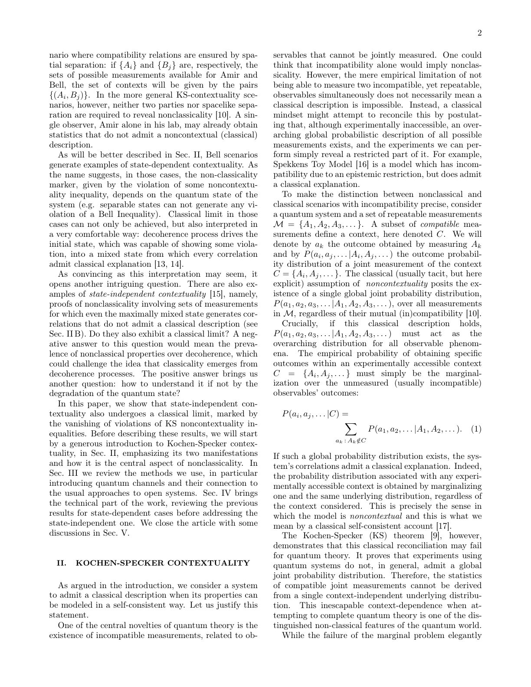
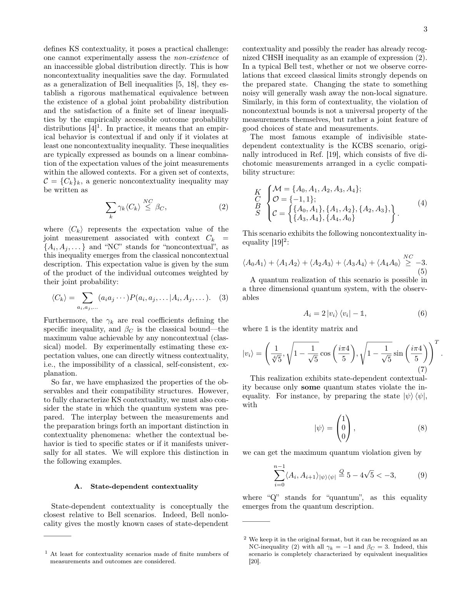
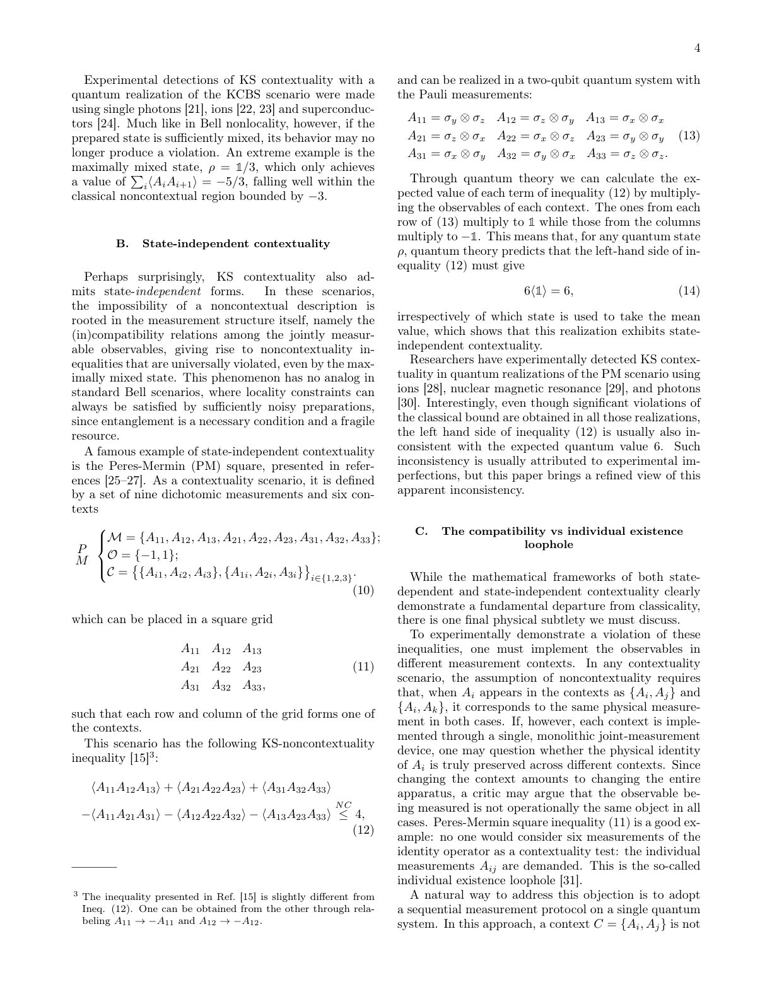
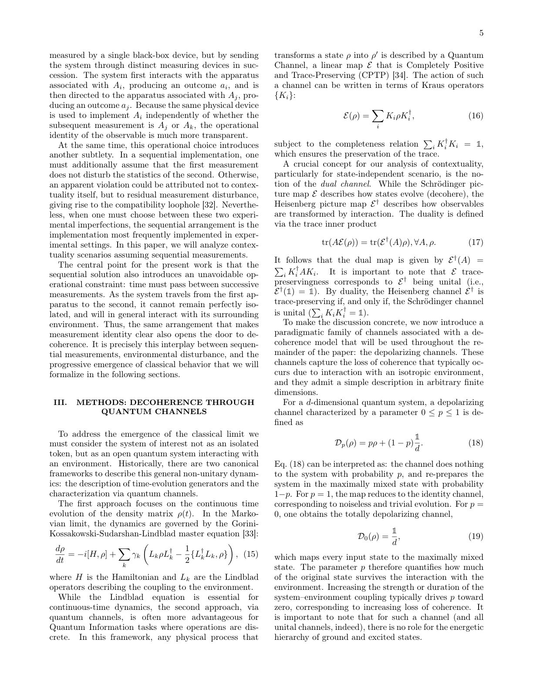
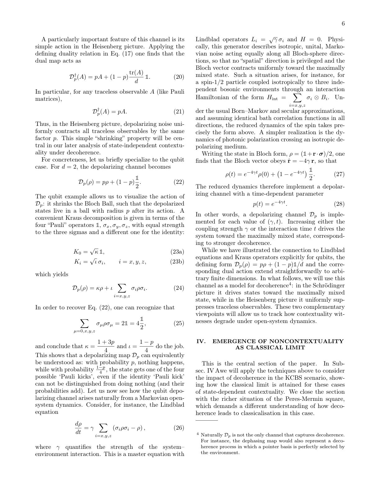
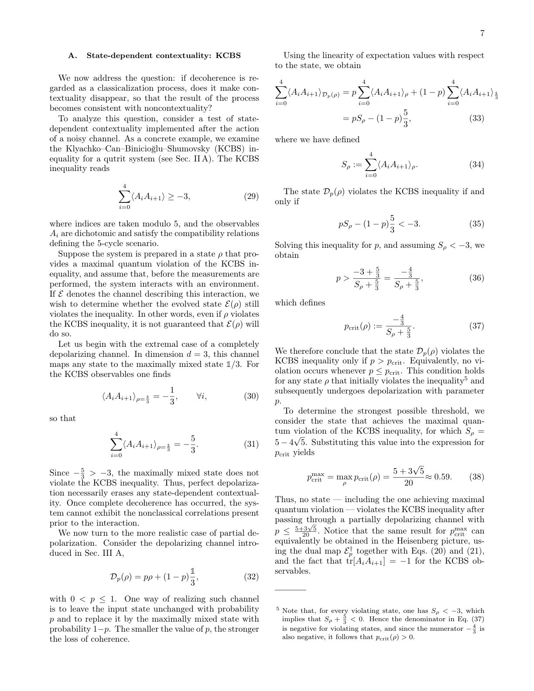
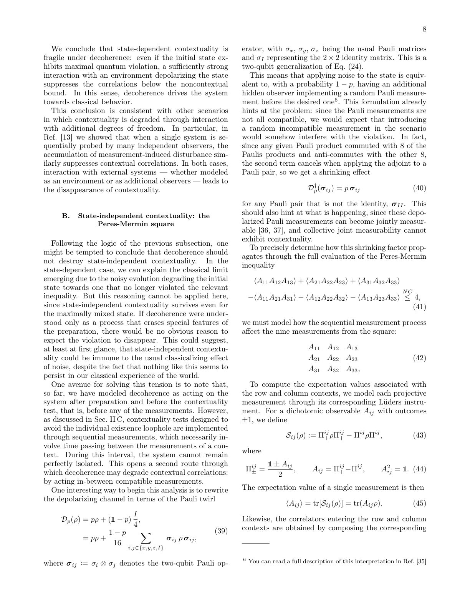
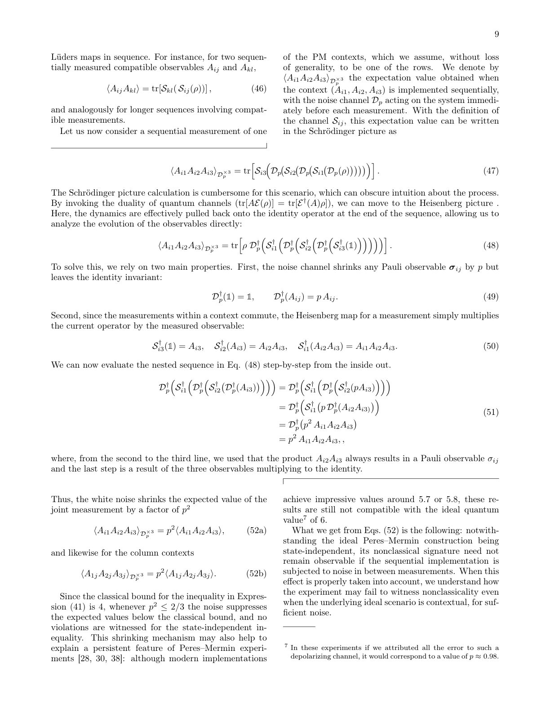
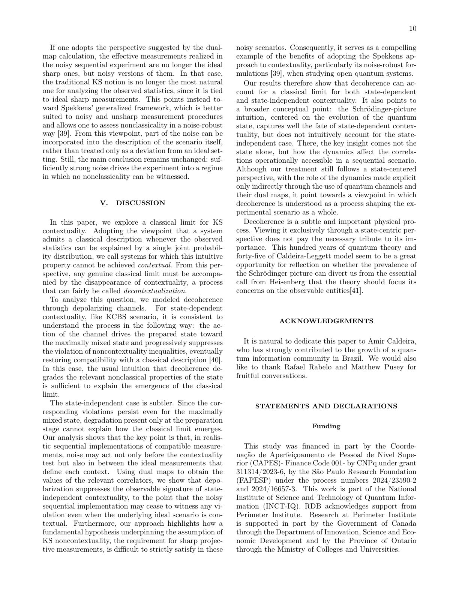
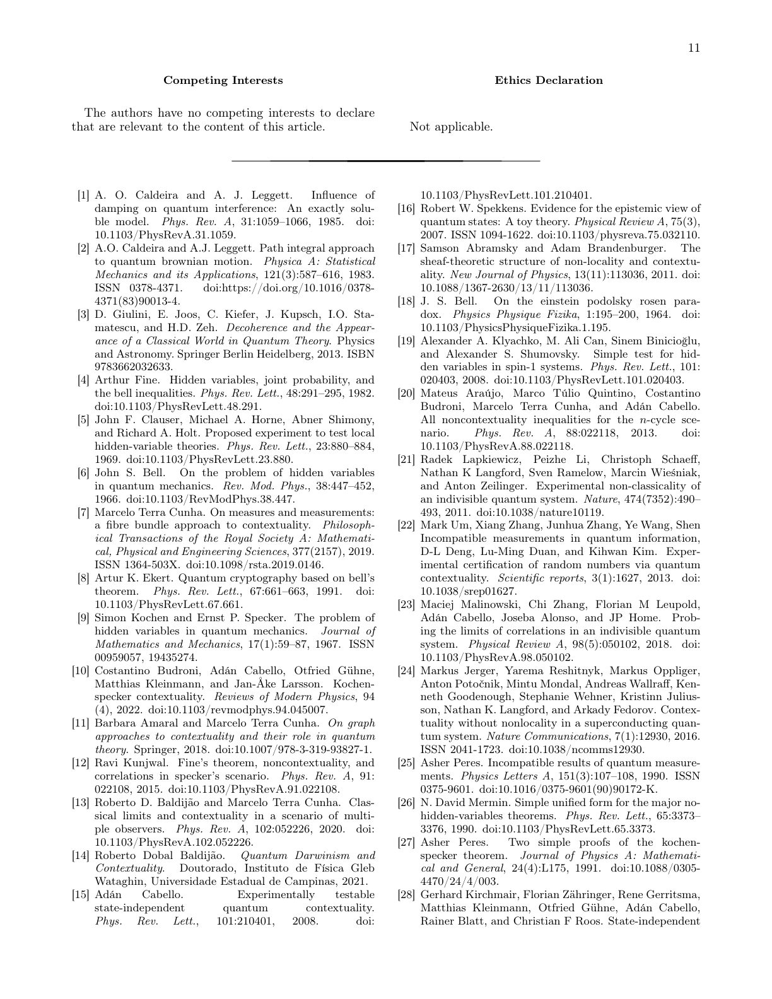
Main problem. The paper investigates how Kochen-Specker contextuality disappears in the classical limit, specifically resolving the paradox of why state-independent contextuality vanishes despite persisting in the maximally mixed state.
Main result. The authors demonstrate that while state-dependent contextuality is erased by state degradation, state-independent contextuality is suppressed by noise acting between sequential measurements, which shrinks the observable correlations.
Method. The study uses open-system dynamics, analyzing sequential measurement implementations under depolarizing channels using both Schrödinger and Heisenberg pictures.
Summary. This paper explores the mechanism by which quantum contextuality vanishes as a system interacts with its environment. It addresses the apparent paradox where state-independent contextuality seems to resist classicalization because it persists even in maximally mixed states. By modeling noise via depolarizing channels in sequential measurements, the authors show that decoherence suppresses the specific correlations needed to witness contextuality. Ultimately, they prove that environmental interaction effectively drives the system into a classical, noncontextual regime.
Model / system. The framework involves open quantum systems modeled via depolarizing channels and the GKSL master equation, applied to the KCBS and Peres-Mermin (PM) square scenarios.
Key observables. Sequential correlators and noncontextuality inequalities (KCBS and Peres-Mermin bounds).
Important parameters / regimes. The depolarizing parameter (p), representing the level of noise/decoherence, and the critical threshold (p_crit) for the disappearance of contextuality.
Assumptions / limitations. The analysis assumes Markovian dynamics, isotropic noise (unital noise), and that decoherence acts both on state preparation and during the measurement sequence.
Paper structure. The paper begins by defining classicality and contextuality, introduces the paradox of state-independent contextuality, applies depolarizing channels to the KCBS and PM scenarios, and concludes by showing how noise-induced suppression of correlations leads to the classical limit.
Why it may be interesting. It provides a fundamental link between the emergence of classicality through decoherence and the erasure of foundational quantum properties like Kochen-Specker contextuality, which is highly relevant to the study of open quantum systems and quantum foundations.
The emergence of classicality is fundamentally driven by the interaction between a quantum system and its environment. Foundational open-system approaches, notably the Caldeira-Leggett model, successfully captured how these interactions lead to macroscopic effects like quantum dissipation and decoherence. However, these approaches often leave the precise definitions of classicality and quantumness ambiguous. In quantum information theory, this boundary is a heavily scrutinized question, and Kochen-Specker contextuality emerges as a hallmark of nonclassicality. It is therefore natural to investigate whether decoherence can actually suppress this property. Taking this path creates an apparent conundrum, once there exist two distinct manifestations of quantum contextuality: state-dependent and state-independent ones. While state-dependent contextuality naturally vanishes under state degradation, state-independent contextuality could persist for any quantum state, since it shows up even for the maximally mixed state! In this paper, we resolve this apparent paradox by analyzing sequential measurement implementations of the paradigmatic Klyachko, Can, Binicioğlu, and Shumovsky (KCBS) and Peres-Mermin prepare-and-measure scenarios under the influence of depolarizing channels. By introducing noise both prior to and in between measurements, and by analyzing the resulting sequential correlators in both the Schrödinger and Heisenberg pictures, we show how open-system dynamics suppress the correlations required to witness contextuality, leading to classicalization.
Authors: Chen Wang, Man Shen, Shi-fan Qi, Yan-kui Bai
Type: theory · Category: quantum information and computing · PDF: https://arxiv.org/pdf/2604.24215v1
Analysis basis: full PDF text, analyzed in chunks
Topic relevance: 🔥 correlated / nonlocal dissipation 4/5 · methods for driven-dissipative 3/5 · entanglement & information structure 2/5 · non-equilibrium dynamics 2/5
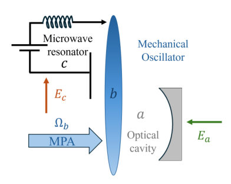
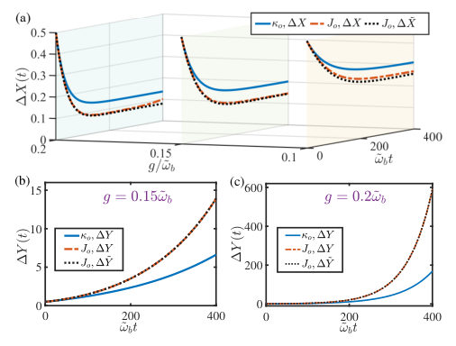
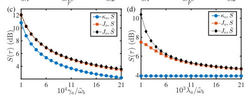
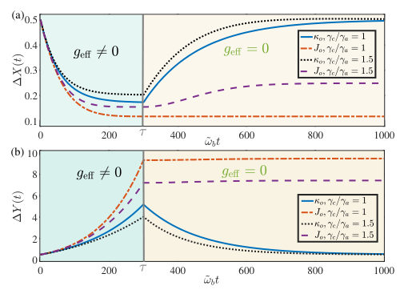
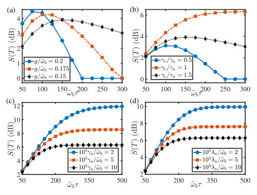
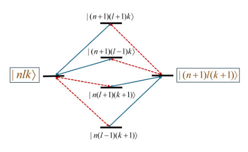
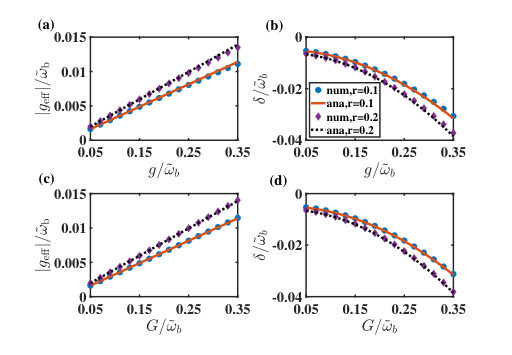
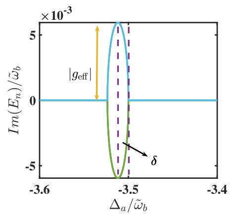
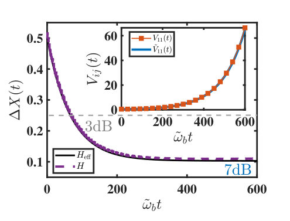
Main problem. The challenge of generating and maintaining stable, high-level optical-microwave two-mode squeezed states (TMSS) in the presence of noise and the limitations of Markovian environments.
Main result. Non-Markovian (structured) environments can significantly enhance squeezing levels and allow TMS to persist even after external driving is switched off, especially when the spectral densities of the two modes are matched.
Method. The authors use second-order perturbation theory to derive an effective Hamiltonian and employ the Non-Markovian Hierarchical Equation of Motion (NMHL) to analyze the system's dynamical evolution.
Summary. This paper investigates how structured, non-Markovian environments can be used to generate and stabilize two-mode squeezing between optical and microwave modes in a hybrid electromechanical system. The authors demonstrate that non-Markovian noise can enhance squeezing levels compared to standard Markovian noise and even allow the squeezed state to persist after the external driving fields are turned off. They also find that matching the spectral densities of the optical and microwave reservoirs is key to preventing the degradation of the squeezed state. This work offers a way to mitigate the detrimental effects of anti-squeezing in quantum transducers.
Model / system. A hybrid electro-optomechanical (EOM) system consisting of an optical cavity mode, a microwave LC resonator, and a mechanical oscillator, all coupled to structured (Lorentzian) reservoirs.
Key observables. Two-mode squeezing level (SL), squeezing variance (Delta X), and anti-squeezing variance (Delta Y).
Important parameters / regimes. Effective coupling strength (g_eff), mechanical parametric amplification (r), spectral density width (lambda), and detunings.
Assumptions / limitations. The system operates in a large detuning regime where the effective Hamiltonian is valid, and the use of the Rotating Wave Approximation (RWA) for system-reservoir coupling.
Figures summary. Fig 1: Schematic of the EOM system; Fig 2: Time evolution of squeezing and anti-squeezing; Fig 3: Parameter space analysis of squeezing level; Fig 4: Squeezing persistence during drive switch-off; Fig 7-9: Validation of the effective Hamiltonian and coupling strength.
Paper structure. The paper begins with a system schematic and effective Hamiltonian derivation, followed by a numerical validation of the model, an analysis of squeezing dynamics in Markovian vs. non-Markovian environments, an investigation of squeezing persistence after driving is removed, and concludes with a comparison of matched vs. mismatched spectral densities.
Why it may be interesting. It provides a theoretical framework for using reservoir engineering and non-Markovian memory effects to enhance and stabilize entanglement, which is crucial for quantum transduction and continuous-variable quantum information processing.
Two-mode squeezed states as paradigmatic entangled resources have broad applications in quantum information processing. Here, we study the generation of stable optical-microwave squeezing in structured environments within a hybrid electro-optomechanical system, where a mechanical oscillator is simultaneously coupled to an optical cavity mode and a microwave mode of an LC resonator. Specifically, an effective Hamiltonian that captures the optical-microwave squeezing interaction is constructed by combining strongly modulated driving fields applied to both photonic modes with a mechanical parametric amplifier. Based on this effective model, the dynamical evolution of two-mode squeezing in structured environments is analyzed. It is remarkably shown that the non-Markovian noise can substantially enhance the squeezing level in comparison to the Markovian case, and that two-mode squeezing can persist even in the absence of external driving fields under non-Markovian conditions, thereby mitigating the detrimental effects of anti-squeezing. Furthermore, the persistence of the two-mode squeezed state is enhanced when the environmental spectral densities of the microwave and optical modes are identical. Our work provides a theoretical framework for generating and persisting two-mode squeezing in structured environments.
Authors: Sebastián V. Romero, Xi Chen, Yue Ban
Type: theory · Category: statistical mechanics · PDF: https://arxiv.org/pdf/2604.24409v1
Analysis basis: full PDF text, analyzed in chunks
Topic relevance: 🔥 non-equilibrium dynamics 4/5 · methods for driven-dissipative 3/5 · driven-dissipative phase transition 2/5 · entanglement & information structure 2/5
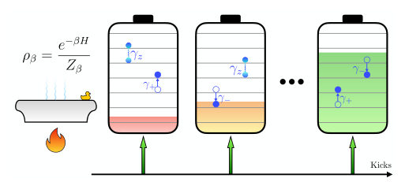
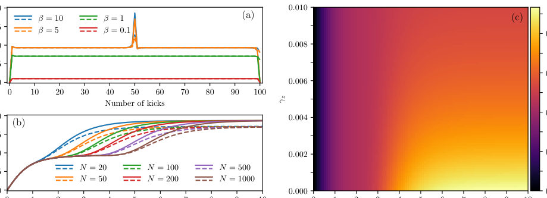
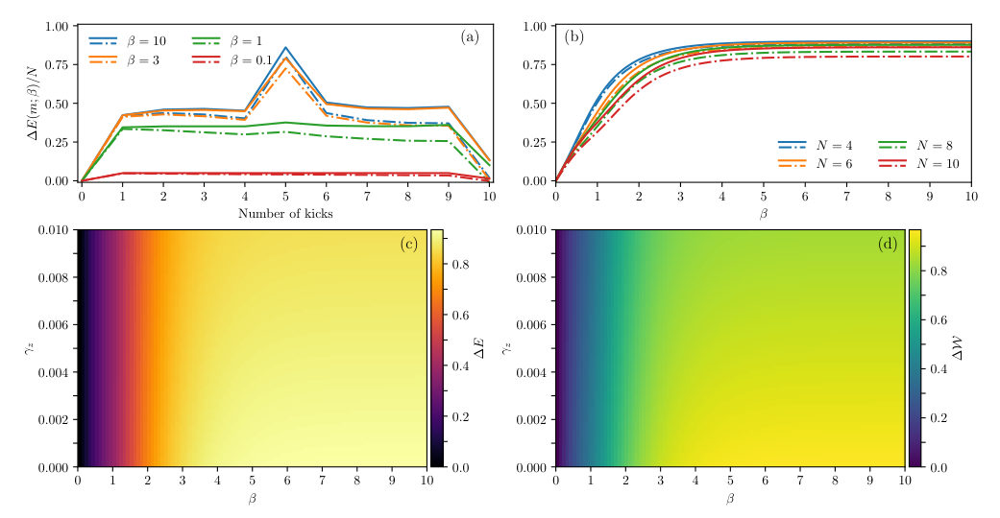
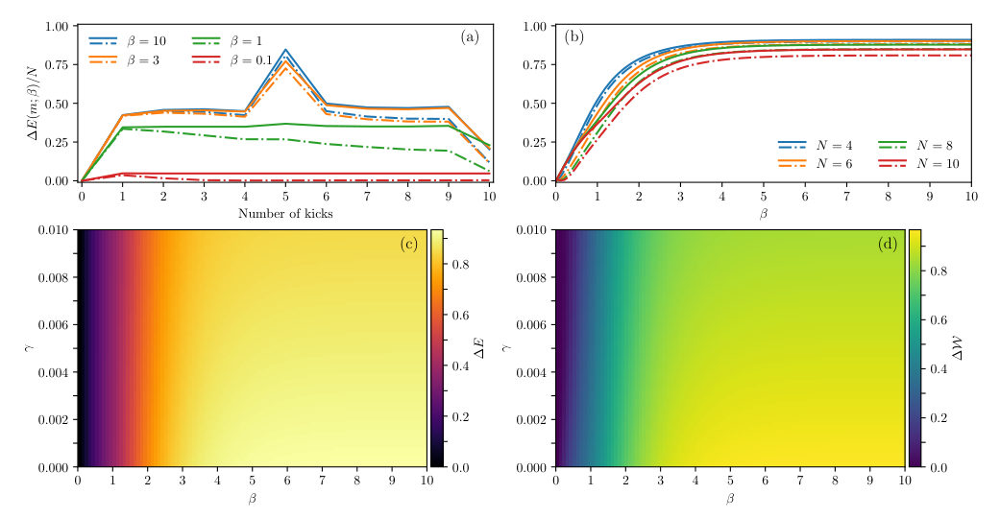
Main problem. Investigating the impact of thermal fluctuations and environmental dissipation (dephasing and relaxation) on the performance and robustness of periodically-kicked quantum batteries.
Main result. The study establishes that while temperature and dissipation reduce energy injection and ergotropy, the charging protocol remains robust under certain regimes, and provides an analytical framework to quantify these effects.
Method. The authors use the Jordan-Wigner and Fourier transformations to map the system to free fermions, solving the Lindblad master equation via a system of coupled linear ordinary differential equations and applying the Cayley-Hamilton theorem.
Summary. This paper explores how realistic environmental factors, such as temperature and decoherence, affect the charging of a quantum battery based on a kicked-Ising model. By using a mathematical framework involving Jordan-Wigner transformations, the authors show how energy injection and extractable work (ergotropy) decay under dissipation. They identify specific regimes where the battery's performance remains robust despite these effects. The work provides a systematic way to assess the viability of quantum batteries in noisy, real-world environments.
Model / system. A Kicked-Ising Chain (KIC) acting as a quantum battery, modeled by a Transverse-Field Ising Model (TFIM) Hamiltonian subject to periodic kicks and open-system dynamics via the Lindblad master equation (including pure dephasing and thermal dissipation).
Key observables. Ergotropy (extractable work), injected energy, mean energy stored, fermion occupation number, and parity weights.
Important parameters / regimes. Inverse temperature (beta), dephasing rate (gamma_z), dissipation rates (gamma_plus/minus), system size (N), and Ising interaction strength (J).
Assumptions / limitations. The dynamics are modeled using the Lindblad master equation, and the dissipation is assumed to follow specific local-spin operators.
Figures summary. Figure 2 shows the evolution of normalized injected energy over time for different temperatures, the scaling of energy injection with system size, and a parameter map of energy injection across temperature and dephasing rate space.
Paper structure. The paper begins by defining the Kicked-Ising battery model, moves to the analytical derivation of the open-system dynamics using fermionization, presents the results for energy injection and ergotropy under thermal and dissipative effects, and concludes with a discussion on robustness and scaling.
Why it may be interesting. This paper is highly relevant for researchers in open quantum systems and many-body dynamics as it provides an exact analytical framework for studying how environmental noise and finite temperature degrade the performance of non-equilibrium quantum energy storage devices.
Quantum batteries (QBs) have emerged as a promising route for fast energy storage and on-chip power supply in quantum devices. Given the limited analytical understanding of open Floquet QBs, we employ the kicked-Ising model as a tractable platform to systematically study its performance under realistic conditions, including finite temperature effects and environmental dissipation. Starting from Gibbs states of the transverse-field Ising model, we incorporate thermal and decoherence effects along the evolution, using both analytical and numerical approaches. Taking ergotropy as a central figure of merit, we characterize the injected and extractable energy, and identify regimes where charging remains robust despite environmental effects. Our results provide a systematic framework for assessing QB performance under thermal and dissipative effects.
Authors: L. A. Machado, N. D. Chavda, B. Chatterjee, M. A. Caracanhas, B. Chakrabarti, A. Gammal, R. P. Sagar
Type: theory · Category: quantum gases · PDF: https://arxiv.org/pdf/2604.24557v1
Analysis basis: full PDF text, analyzed in chunks
Topic relevance: 🔥 entanglement & information structure 4/5 · 🔥 non-equilibrium dynamics 4/5 · driven-dissipative phase transition 2/5
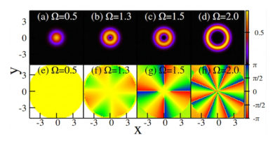
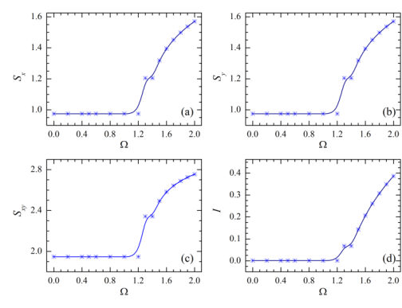
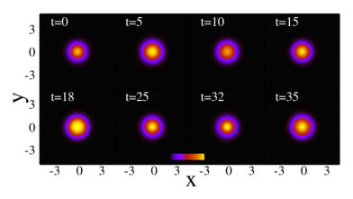
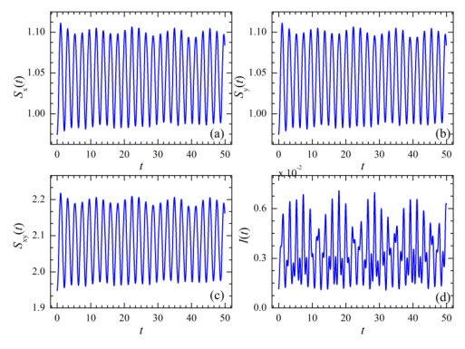
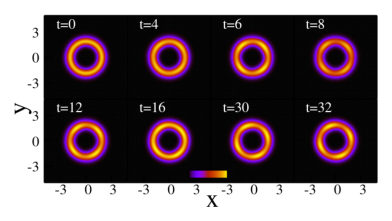
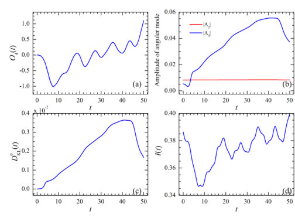
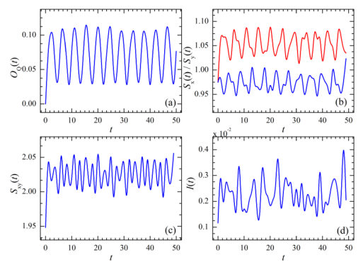
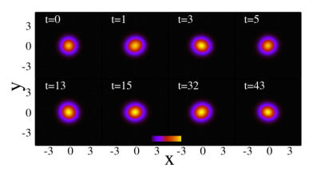
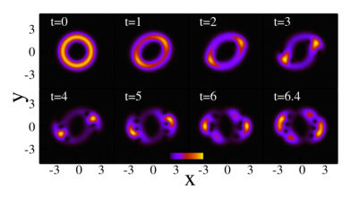
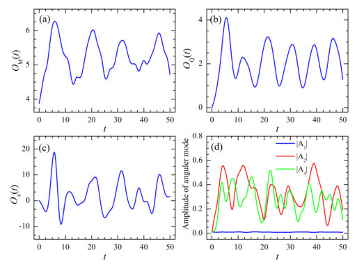
Main problem. Investigating the nonequilibrium dynamics, stability, and symmetry breaking of rotating 2D Bose-Einstein condensates (BECs) following interaction and trap quenches.
Main result. The study identifies a transition from regular, periodic oscillations in vortex-free states to irregular, chaotic dynamics in giant vortices, using mutual information to detect a clear dynamical phase transition at a specific rotation frequency.
Method. The Multiconfigurational Time-Dependent Hartree method for bosons (MCTDHB) is used to solve the time-dependent Schrödinger equation for a fully correlated many-body system.
Summary. This paper explores how rotating 2D Bose-Einstein condensates respond to sudden changes in their environment. It demonstrates that while low-rotation states undergo regular oscillations, high-rotation 'giant' vortices exhibit chaotic splitting and fragmentation. By using information-theoretic tools like mutual information, the authors can precisely identify the transition between regular and chaotic dynamical regimes. This work establishes entropy-based measures as sensitive probes for many-body correlations in quantum gases.
Model / system. A 2D rotating Bose gas of N=8 identical bosons in a symmetric anharmonic (quartic) trap with a finite-range Gaussian interaction potential.
Key observables. One-body density and phase, Shannon entropies (marginal and joint), mutual information, Kullback-Leibler divergence (including angular-resolved), and angular Fourier components.
Important parameters / regimes. Rotation frequency (Omega), interaction strength (g), trap anisotropy, and number of bosons (N=8).
Assumptions / limitations. The system is treated in a 2D plane with a finite-range Gaussian potential instead of a pure delta-function contact interaction; the number of orbitals (M) is finite.
Figures summary. Figures show density snapshots of vortex formation and fragmentation, time evolution of entropy and mutual information, and a 3D dynamical phase diagram of correlations.
Paper structure. The paper introduces the physical system and Hamiltonian, describes the MCTDHB method, analyzes initial state characterization, explores dynamics under interaction quenches, examines dynamics under trap quenches, and concludes with a phase diagram of correlations.
Why it may be interesting. It provides a powerful framework for using information-theoretic measures to quantify many-body complexity, fragmentation, and the onset of chaos in ultracold atomic systems.
We investigate the nonequilibrium dynamics of a two-dimensional rotating Bose gas confined in a symmetric anharmonic trap, employing the multiconfigurational time-dependent Hartree method for bosons (MCTDHB). We study states ranging from vortex-free configurations to multicharged (giant) vortices, prepared by tuning the rotation frequency, and analyze their response to sudden interaction and trap quenches. In vortex-free states, interaction quenches induce regular breathing--like dynamics, whereas in the presence of giant vortices they lead to symmetry-breaking surface excitations. In contrast, trap deformations that excite quadrupole-like modes produce stable oscillations in vortex-free condensates but trigger rapid, irregular, and effectively chaotic splitting dynamics in multicharged vortices. To characterize these processes beyond conventional density and phase observables, we employ information-theoretic measures, including marginal and joint entropies, mutual information, and Kullback-Leibler (KL) divergence, supplemented by an angular-resolved KL measure that captures symmetry breaking and azimuthal localization. We find that chaotic splitting is accompanied by a pronounced growth of information-theoretic indicators, signaling the buildup of many-body correlations and increasing complexity in the system dynamics. Our results demonstrate the extreme sensitivity of giant vortices to excitation protocols and establish information-theoretic measures as a powerful framework to quantify correlations and complexity in rotating quantum gases.
Authors: D. Ronco, F. Arrouas, N. Ombredane, E. Flament, Q. Levoy, B. Peaudecerf, D. Guéry-Odelin
Type: both · Category: quantum gases · PDF: https://arxiv.org/pdf/2604.24722v1
Analysis basis: full PDF text, analyzed in chunks
Topic relevance: 🔥 analog quantum simulation 4/5 · 🔥 non-equilibrium dynamics 4/5 · exotic spin models in light-matter 2/5
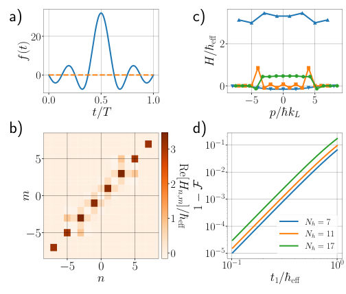
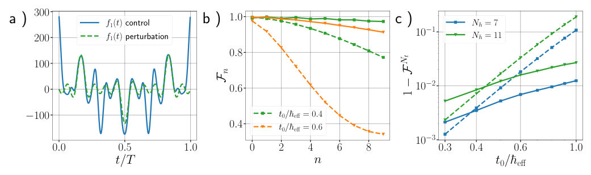
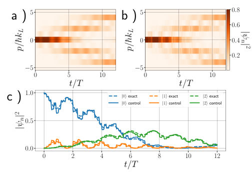
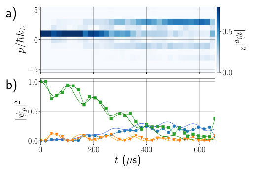
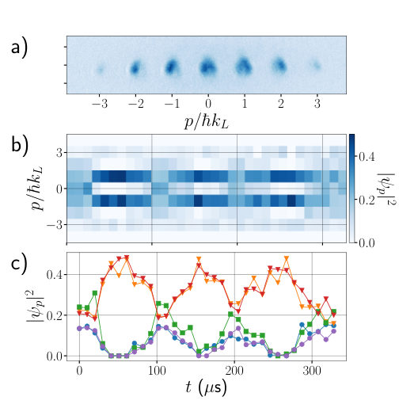
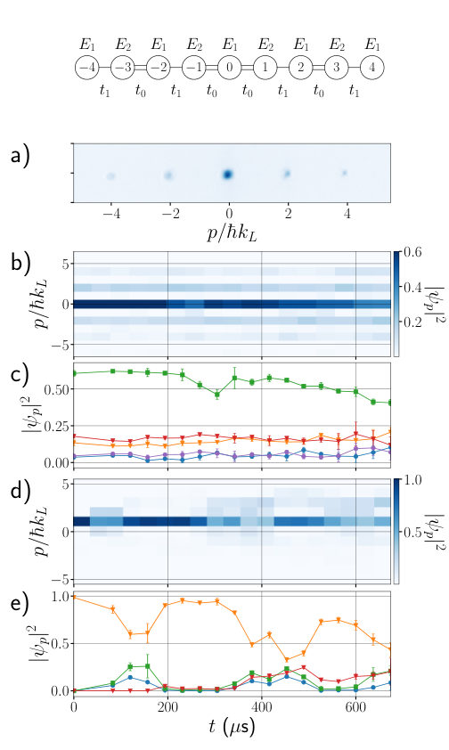
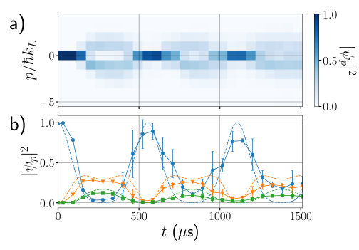
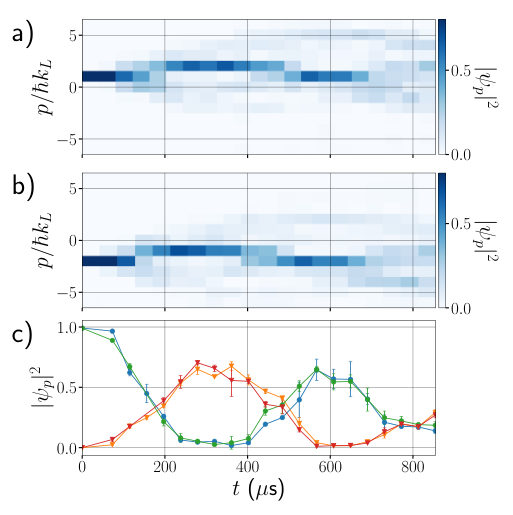
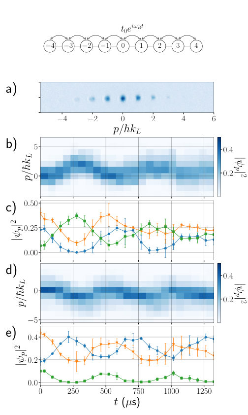
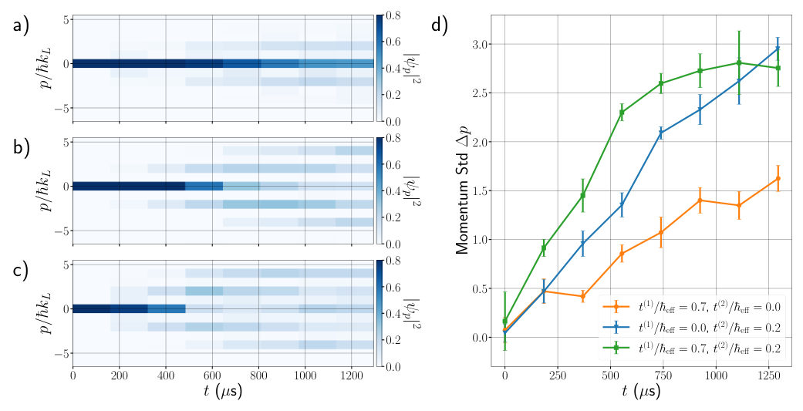
Main problem. Developing a programmable method for Floquet engineering of tight-binding Hamiltonians in momentum-space lattices by independently tuning on-site energies and tunneling amplitudes.
Main result. The authors demonstrate that quantum resonances in a shaken rotor can be used to engineer various models, including the Rice-Mele model, and show that optimal control can significantly enhance multi-period Floquet fidelity.
Method. The study uses Floquet theory, first-order time-dependent perturbation theory, and a kernel-based inversion method, supplemented by gradient-ascent optimal control techniques.
Summary. This paper presents a method to engineer programmable tight-binding Hamiltonians in momentum space using a shaken rotor of ultracold atoms. By exploiting quantum resonances and optimal control, the researchers can independently tune tunneling amplitudes and on-site energies. They experimentally demonstrate the simulation of the Rice-Mele model, topological edge states, and Bloch oscillations. This approach turns quantum resonances into a versatile resource for quantum simulation.
Model / system. A Bose-Einstein condensate of Rubidium-87 atoms in a dynamically modulated (shaken) optical lattice, modeled by a generalized 'shaken rotor' Hamiltonian.
Key observables. Momentum distribution, site populations, momentum width, average momentum, and Floquet operator fidelity.
Important parameters / regimes. Effective Planck constant (hbar_eff), kick period (T), lattice depth (s0), and modulation functions (f1, f2).
Assumptions / limitations. The framework assumes a perturbative regime (weak driving) and relies on quantum resonance conditions to maintain discrete translational symmetry.
Figures summary. Figures show the real and imaginary parts of modulation functions, comparison between perturbative and optimal control solutions, and experimental observations of momentum-space Bloch oscillations, topological edge states, and wave packet expansion in superlattices.
Paper structure. The paper progresses from theoretical derivation of the Floquet framework and analytical relations to the implementation of optimal control, followed by experimental verification of various tight-binding models and topological phenomena.
Why it may be interesting. It provides a powerful toolkit for simulating complex condensed-matter models like the Rice-Mele model and topological junctions using the highly controllable platform of momentum-space lattices in ultracold atoms.
Quantum simulation with ultracold atoms provides a versatile platform to emulate condensed-matter models. In particular, momentum-space lattices enable the realization of programmable tight-binding Hamiltonians. Here, we generalize this approach by exploiting quantum resonances of a periodically driven (shaken) rotor within the Floquet framework. Using first-order time-dependent perturbation theory, we derive analytical relations between the lattice modulation and the effective tight-binding parameters, and identify explicit solutions for several resonances. We further apply optimal-control techniques to enhance the multi-period Floquet fidelity and extend the accessible parameter regimes. Experimentally, we implement this scheme with a Bose-Einstein condensate of rubidium-87 atoms in a dynamically modulated optical lattice. We demonstrate the simulation of the Rice-Mele model, including band-structure measurements and topological edge states, as well as momentum Bloch oscillations, and superlattice configurations with controlled periodicity. Our results establish quantum resonances as a powerful resource for Floquet engineering of tight-binding models in momentum space.
Authors: Asliddin Khudoyberdiev, Dag-Björn Hering, Vanessa Sulaiman, Götz S. Uhrig
Type: theory · Category: strongly correlated electrons · PDF: https://arxiv.org/pdf/2604.24695v1
Analysis basis: full PDF text, analyzed in chunks
Topic relevance: 🔥 non-equilibrium dynamics 4/5 · non-equilibrium universality 3/5 · Keldysh / 2PI / non-Gaussian methods 2/5
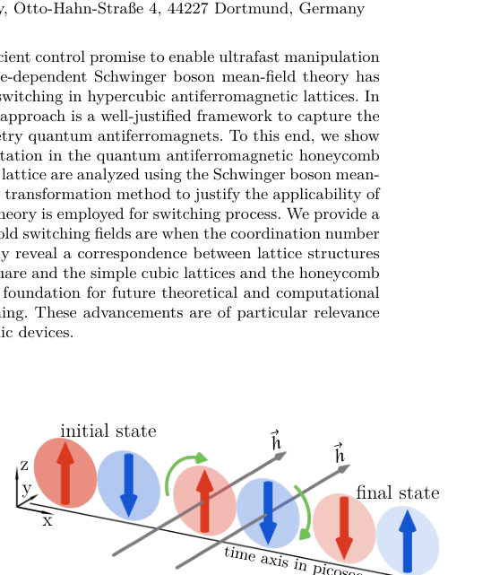
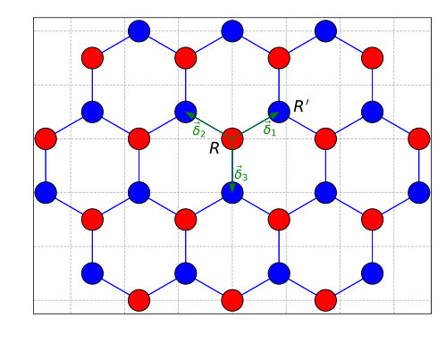
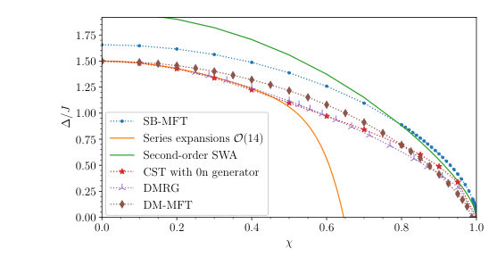
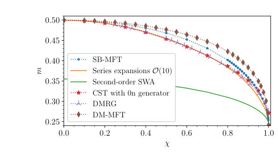
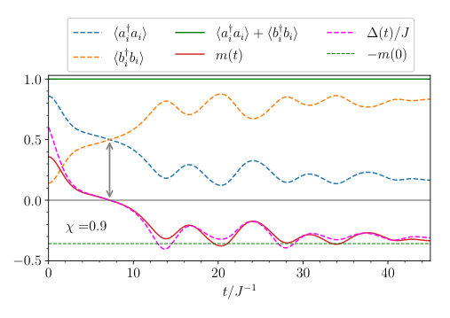
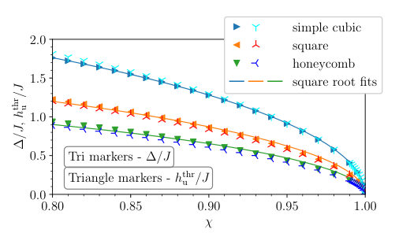
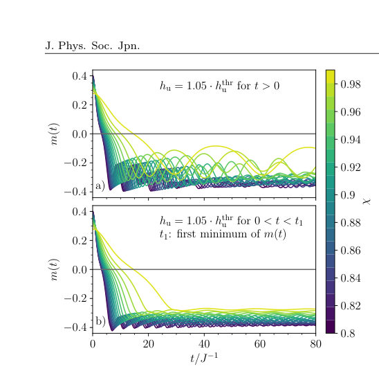
Main problem. Investigating the control and switching of the Neel vector in a quantum antiferromagnetic honeycomb lattice, specifically determining the threshold magnetic fields required for magnetization reorientation.
Main result. The study establishes universal scaling laws for threshold fields in different lattices and demonstrates that staggered fields enable 'exchange-enhanced switching' at much lower magnitudes than uniform fields.
Method. The authors use time-dependent Schwinger boson mean-field theory (SB-MFT) and Continuous Similarity Transformation (CST) to model the non-equilibrium switching process and validate equilibrium properties.
Summary. This paper explores how to efficiently flip the magnetic orientation in a quantum antiferromagnetic honeycomb lattice. By using Schwinger boson mean-field theory, the authors show that applying a staggered magnetic field can trigger 'exchange-enhanced switching' at much lower energy costs than a uniform field. They also identify universal scaling laws that relate the required switching field to the lattice's coordination number. These findings are significant for the development of ultrafast, energy-efficient spintronic and magnonic devices.
Model / system. A spin-1/2 anisotropic XXZ Heisenberg model on a quantum antiferromagnetic honeycomb lattice, including both uniform and staggered external magnetic fields.
Key observables. Sublattice magnetization (Neel vector), spin gap, boson occupation numbers, and oscillation frequencies of the Neel vector.
Important parameters / regimes. Anisotropy parameter (chi), coordination number (z), exchange coupling (J), and external magnetic field strengths (hu and hs).
Assumptions / limitations. The study focuses on the ground state at zero temperature and assumes the validity of the Schwinger boson mean-field approximation for low-symmetry lattices.
Figures summary. Figures illustrate the switching process, the honeycomb lattice structure, spin gap and magnetization vs. anisotropy, temporal evolution of magnetization and boson occupation, and scaling laws for threshold fields across different lattice types.
Paper structure. The paper begins by validating the SB-MFT framework against CST and DMRG for equilibrium properties, then moves to modeling the non-equilibrium switching dynamics under uniform and staggered fields, and concludes with a comparative analysis of lattice coordination numbers and universal scaling laws.
Why it may be interesting. The paper provides deep insights into many-body dynamics, specifically how collective modes (magnons) drive the reversal of an order parameter and how dephasing leads to steady-state convergence without explicit relaxation.
The switching of antiferromagnetic order and its efficient control promise to enable ultrafast manipulation of data and large storage capacity. Recently, the time-dependent Schwinger boson mean-field theory has been successfully developed to study the Néel vector switching in hypercubic antiferromagnetic lattices. In the present article, we aim at demonstrating that the approach is a well-justified framework to capture the essentials of the switching process, even in low-symmetry quantum antiferromagnets. To this end, we show the possibility of the sublattice magnetization reorientation in the quantum antiferromagnetic honeycomb lattice. First, equilibrium properties of the honeycomb lattice are analyzed using the Schwinger boson mean-field theory and compared to the continuous similarity transformation method to justify the applicability of the approach. Then, the Schwinger boson mean-field theory is employed for switching process. We provide a comprehensive answer to the question what the threshold switching fields are when the coordination number of the lattice is varied. Indeed, the results of the study reveal a correspondence between lattice structures and the threshold fields by comparing them for the square and the simple cubic lattices and the honeycomb lattice. The findings of the present article extend the foundation for future theoretical and computational advancements in the field of antiferromagnetic switching. These advancements are of particular relevance for the development of ultrafast spintronic or magnonic devices.
Authors: Maggie Lawrence, Elise Wang, Dvira Segal
Type: theory · Category: disordered systems and neural networks · PDF: https://arxiv.org/pdf/2604.23005v1
Analysis basis: full PDF text, analyzed in chunks
Topic relevance: 🔥 correlated / nonlocal dissipation 4/5 · non-equilibrium dynamics 3/5 · methods for driven-dissipative 2/5
Main problem. Investigating whether spatially structured (site-dependent) environmental noise can be engineered to enhance quantum transport and overcome localization effects like Wannier-Stark and Anderson localization.
Main result. Site-optimized dephasing consistently outperforms uniform dephasing by increasing transport efficiency and promoting spatial delocalization, with specific optimal profiles depending on the tunneling range and energy landscape.
Method. Numerical optimization of site-dependent dephasing rates using the Adamax algorithm within a Lindblad quantum master equation framework, supplemented by analytical solutions for three-site models.
Summary. This paper explores how engineering site-dependent environmental noise can enhance quantum transport in 1D systems prone to localization. By optimizing dephasing profiles, the authors show that one can overcome energy detuning and destructive interference in both ramped and disordered potentials. The study identifies specific design rules, such as alternating dephasing for short-range tunneling and increasing dephasing for long-range tunneling. These findings offer a strategy for controlling population flux and spatial coherence in open quantum systems.
Model / system. One-dimensional lattices with power-law tunneling (parameterized by exponent alpha) subject to either ramped (Wannier-Stark) or energy-disordered (Anderson) potentials.
Key observables. Steady-state population flux, spatial delocalization of the steady state, coherence length, and coherence maps (off-diagonal density matrix elements).
Important parameters / regimes. Tunneling power-law exponent (alpha = 1, 3, 5), dephasing rates (site-dependent vs. uniform), energy landscape gradient/disorder strength, and system size (N).
Assumptions / limitations. Single-particle regime, independent local environments for each site, and small tunneling/leak rates relative to energy differences and dephasing.
Figures summary. Figures illustrate energy structures, localization development, population flux as a function of dephasing, optimized dephasing profiles, and steady-state coherence maps for different tunneling ranges and potentials.
Paper structure. The paper introduces the problem of noise-assisted transport, presents the theoretical model and optimization framework, details results for ramp potentials (short vs. long-range tunneling), extends findings to disordered systems, and concludes with a discussion of design principles and experimental implications.
Why it may be interesting. It provides new design principles for controlling transport and coherence in open quantum systems by treating the environment as a tunable, spatially structured resource rather than a uniform nuisance.
Environmental noise can enhance transport, an effect known as environmental noise-assisted quantum transport. Most theoretical studies focus on optimizing system parameters under spatially uniform system-environment coupling. Here, instead, we optimize the environmental noise itself by allowing for site-dependent dephasing. We investigate steady-state transport in one-dimensional lattices with either ramped or disordered energy landscapes, considering both short- and long-range coherent tunneling. In the absence of environmental effects, in the thermodynamic limit these systems can exhibit localization, and thus suppressed transport, arising from destructive interference. Using a Lindblad master equation framework, we implement local dephasing optimized to maximize steady-state population flux. We find that for ramp potentials, short-range tunneling favors selective dephasing on alternating sites, whereas long-range tunneling benefits from a dephasing profile that increases with distance from the injection site. In energetically disordered systems, strongly detuned sites require enhanced local dephasing under short-range tunneling to facilitate transport. In all cases, we find that site-optimized dephasing allows higher transport efficiency than uniform dephasing, and it is accompanied by increased spatial delocalization of the steady state. Our results provide microscopic insight into the interplay between coherent dynamics and environmental noise. Dephasing broadens energy levels locally, helping to overcome detuning and destructive interference. More generally, we establish spatially-structured environmental noise as a strategy for controlling both quantum transport and state coherence in open systems.
Authors: Saikat Banerjee
Type: theory · Category: other · PDF: https://arxiv.org/pdf/2604.23768v1
Analysis basis: full PDF text, analyzed in chunks
Topic relevance: 🔥 entanglement & information structure 4/5 · non-equilibrium dynamics 3/5 · spintronics-quantum-optics interface 2/5
Main problem. Investigating whether the classical effective-field description of the Barnett effect remains valid when the mechanical rotation is quantized.
Main result. The study shows that quantizing the rotor causes the Barnett field to become operator-valued, leading to the generation of coherent spin-rotor entanglement and a breakdown of the classical Zeeman-like analogy.
Method. The author uses an exact analytical solution of a spin-rotor Hamiltonian, calculating eigenenergies, time-evolution, and entanglement metrics like spin purity and entanglement entropy.
Summary. This paper explores the quantum limits of the Barnett and Einstein-de Haas effects. By using a minimal model of a spin-1/2 particle coupled to a quantum rotor, the author demonstrates that quantizing the rotation transforms the Barnett field from a static magnetic field into an operator-valued field. This transition leads to the creation of entanglement between the spin and the rotor. The results show that the classical effective-field picture fails qualitatively in the quantum regime, replaced by a reciprocal relationship between spin dynamics and rotor coherence.
Model / system. A minimal, exactly solvable model consisting of a spin-1/2 particle coupled to a planar quantum rotor with a Hamiltonian containing spin-rotation coupling.
Key observables. Reduced spin purity (P_spin), entanglement entropy (S_ent), rotor coherence (|K(t)|), and spin-state-dependent phase evolution.
Important parameters / regimes. The coupling parameter eta = gm/Delta, which defines weak-coupling (eta < 1), balanced (eta = 1), and large-coupling (eta > 1) regimes.
Assumptions / limitations. The model is a minimal setting; the author notes that adding more degrees of freedom (like angular dependence) is a potential extension.
Figures summary. Fig 1(a) shows the energy spectrum and Barnett-split branches; Fig 1(b) shows the time dependence of spin purity for different coupling strengths; Fig 1(c) shows the periodic buildup and decay of entanglement entropy.
Paper structure. The paper introduces the physical problem of the Barnett effect, presents the minimal spin-rotor model, provides an exact analytical solution, analyzes the quantum-mechanical breakdown of the effective-field picture through entanglement and purity, and concludes with the identification of a reciprocal quantum manifestation of the effect.
Why it may be interesting. It provides a fundamental look at how the quantization of a mechanical degree of freedom fundamentally changes the nature of an effective field, moving from a static parameter to an operator that generates entanglement.
The Barnett effect is usually understood through an effective magnetic field generated by mechanical rotation, while its reciprocal Einstein--de Haas effect describes the transfer of spin angular momentum to mechanical motion. We show that this effective-field picture changes qualitatively once the mechanical degree of freedom itself is quantized. To demonstrate this, we introduce an exactly solvable minimal spin-rotor model in which a spin-$1/2$ is coupled to a quantum rotor. In a fixed angular-momentum sector, the model reproduces the conventional Barnett splitting and remains formally equivalent to a Zeeman problem. For a superposition of rotor sectors, however, the Barnett field becomes operator-valued and the resulting dynamics generates coherent spin-rotor entanglement. This is directly visible in the reduced spin purity, rotor coherence, and entanglement entropy. Our results identify a minimal quantum setting in which the Barnett effective-field picture departs from its classical form and acquires a reciprocal manifestation through spin-dependent rotor coherence.
Authors: Th. K. Mavrogordatos
Type: theory · Category: other · PDF: https://arxiv.org/pdf/2604.24727v1
Analysis basis: full PDF text, analyzed in chunks
Topic relevance: 🔥 quantum measurements 4/5 · methods for driven-dissipative 3/5 · non-equilibrium dynamics 2/5
Main problem. The paper proposes and investigates a cavity/circuit QED analogue of the Stern-Gerlach experiment to explore how quantum contextuality and measurement backaction affect the stability of dressed states.
Main result. The study demonstrates that different measurement unravellings (homodyne vs. heterodyne) lead to non-equivalent physical outcomes, such as biased vs. symmetric dressed-state populations, and identifies the emergence of spontaneous dressed-state polarization and coherent-state superpositions.
Method. The author uses quantum trajectory theory, specifically Monte Carlo wave-function simulations and the Stochastic Schrödinger Equation, to unravel the Lindblad master equation.
Summary. This paper proposes a quantum optical version of the Stern-Gerlach experiment using a cavity QED platform. It shows that the way a system is monitored (e.g., via homodyne or heterodyne detection) changes the physical outcomes, demonstrating quantum contextuality. The research highlights how measurement backaction can drive the system into spontaneous polarization or create transient Schrödinger cat-like states. Additionally, it explores how photoelectron statistics can reveal squeezed fluctuations in the bad-cavity limit.
Model / system. A Jaynes-Cummings system consisting of a two-state atom coupled to a cavity mode, driven by a resonant field, and subject to cavity photon loss and spontaneous emission.
Key observables. Quadrature phase operators, measurement signals (homodyne/heterodyne), Wigner functions, Bloch-sphere trajectories, and photoelectron waiting-time distributions.
Important parameters / regimes. Driving strength (epsilon), coupling strength (g), cavity decay (kappa), atomic decay (gamma), and the local oscillator phase (theta).
Assumptions / limitations. The study utilizes the rotating wave approximation (RWA), the secular approximation, and considers the 'zero system size' limit (gamma/2kappa = 0) in certain regimes.
Figures summary. Figure 3 depicts Bloch-sphere trajectories and conditioned Wigner functions showing the evolution of the system.
Paper structure. The paper introduces a cavity QED analogue of the Stern-Gerlach experiment, defines the Hamiltonian and master equation, explores different measurement unravellings (homodyne and heterodyne), analyzes the effects of local oscillator phase on state stability, and concludes with the use of photoelectron statistics as a diagnostic tool.
Why it may be interesting. It provides deep insights into how the choice of measurement scheme (unravelling) fundamentally alters the observed steady-state dynamics and symmetry breaking in open quantum systems, which is central to quantum optics and the study of quantum contextuality.
We propose a contextual cavity/circuit QED analogue and extension of the Stern-Gerlach experiment, where the pseudo-spin of a two-state atomic' transition plays the role of the ``spin'', while the resonant field driving the transition stands for the ``magnetic field''. A phase-sensitive continuous detection of the cavity field coupled to the inducedatomic' dipole affects the stability of the two distinct outcomes. The dressed states comprising the latter give their place to a self-consistent spontaneous dressed-state polarization as the driving strength is lowered. The associated evolution proves anew highly contextual, underpinned by a persistent production of coherent-state superpositions for a particular setting of the monitoring device. Finally, when bistability is absent, we employ the photoelectron `atomic' emission statistics as a diagnostic tool of the cavity field fluctuations.
Authors: Hiroo Azuma
Type: both · Category: quantum information and computing · PDF: https://arxiv.org/pdf/2604.23086v1
Analysis basis: full PDF text, analyzed in chunks
Topic relevance: 🔥 quantum optics experiment 4/5 · QC/QI experiment 3/5 · quantum measurements 2/5
Main problem. The paper investigates the non-Gaussianity of Pegg-Barnett phase-operator eigenstates and proposes an experimental quantum-optical circuit for their generation and for phase estimation.
Main result. The authors confirm that these eigenstates exhibit negative Wigner functions, with negativity volume increasing with Hilbert space dimension, and identify single-photon detection as the source of their non-Gaussianity.
Method. The study uses Wigner function calculations and negativity volume metrics to quantify non-Gaussianity, alongside numerical simulations of a quantum-optical circuit including imperfect detectors.
Summary. This paper explores the properties and experimental generation of Pegg-Barnett phase-operator eigenstates. It demonstrates that these states are non-Gaussian, characterized by negative regions in their Wigner functions that grow with the Hilbert space dimension. The authors propose a quantum-optical circuit using single-photon detection to create these states and evaluate how detector inefficiency affects state fidelity. Finally, the paper presents a scheme for using these states in a phase-estimation experiment.
Model / system. The system consists of Pegg-Barnett phase-operator eigenstates in a finite-dimensional Hilbert space, generated via a quantum-optical circuit involving two-mode squeezed vacuum, beam splitters, displacement operators, and single-photon detectors.
Key observables. Wigner function negativity volume, fidelity, detection probability, and photon-number detection probabilities at beam splitter outputs.
Important parameters / regimes. Hilbert space dimension (s), detector efficiency (eta), squeezing parameter (r), and phase (phi).
Assumptions / limitations. The use of infinite-dimensional negativity volume measures for finite-dimensional states is justified by the limit s to infinity; the study also assumes a small displacement limit for certain calculations.
Figures summary. Figure 1 shows Wigner functions for increasing s; Figure 2 shows a rotating Wigner pattern; Figure 3 and 4 show the monotonic increase of negativity volume and Wigner function radius with s; Figure 9 provides a schematic of the phase-estimation setup.
Paper structure. The paper begins by analyzing the Wigner functions and non-Gaussianity of the eigenstates, moves to the design and simulation of a generation circuit under detector inefficiency, and concludes with a practical application in a phase-estimation experiment.
Why it may be interesting. This paper is highly relevant to quantum optics and quantum information as it explores the generation of non-Gaussian states, which are essential resources for continuous-variable quantum computing and high-precision phase estimation.
In this paper, we study the non-Gaussianity of the eigenstates of the Pegg-Barnett phase observable. By computing the Wigner functions of the eigenstates, we confirm that they take negative values in specific regions of the phase space. The Pegg-Barnett phase-operator eigenstates lie on a finite-dimensional Hilbert space. Thus, we examine how their negativity volumes depend on the dimension of the Hilbert space. Moreover, we present a quantum-optical circuit that generates these eigenstates and identify single-photon detection as the origin of their non-Gaussianity. To investigate a more realistic experimental implementation, we introduce imperfect single-photon detectors with non-unit efficiency into the circuit and evaluate the dependence of the detection probability, the output-ideal fidelity, and the negativity volume of the approximate eigenstate output from the circuit on the detector efficiency. Finally, as a practical application, we consider a phase-estimation experiment of an arbitrary unknown state by injecting both the unknown state and a known Pegg-Barnett eigenstate into a 50-50 beam splitter and individually counting the numbers of photons emitted from its two output ports.
Authors: Hanlin Tang, Kidae Shin, Ashwin K. Boddeti, Sebastian P. Horvath, Adam Turflinger, Joseph Alexander, Jeffrey A. Dhas, Zihua Zhu, Shuhang Pan, Jeff D. Thompson, Yingge Du, Frederick J. Walker, Charles H. Ahn
Type: experiment · Category: quantum information and computing · PDF: https://arxiv.org/pdf/2604.24582v1
Analysis basis: full PDF text, analyzed in chunks
Topic relevance: 🔥 QC/QI experiment 4/5 · 🔥 quantum optics experiment 4/5
Main problem. The spin coherence of Er3+ ions in CaWO4 is limited by the nuclear spin bath of the 14.3% natural abundance 183W isotope, hindering the development of scalable quantum interconnects.
Main result. The researchers successfully grew isotopically enriched Ca186WO4 thin films via MBE, reducing 183W abundance from 14.3% to 1.2% and demonstrating single-ion resonance features in integrated nanophotonic devices.
Method. Molecular Beam Epitaxy (MBE) was used for growth, with isotopic analysis performed via ToF-SIMS and optical characterization via photoluminescence and spectroscopy in integrated photonic crystal cavities.
Summary. This paper reports the successful synthesis of isotopically enriched Ca186WO4 thin films designed to improve the spin coherence of Er3+ ions. By reducing the concentration of the decohering 183W isotope from 14.3% to 1.2%, the authors provide a scalable platform for quantum interconnects. They demonstrate high crystalline quality and the ability to resolve single-ion resonances when integrated with nanophotonic cavities. While spectral diffusion was observed in non-stoichiometric films, the results establish a path toward high-performance, nuclear-spin-limited quantum interfaces.
Model / system. The experimental platform consists of Er3+ ions implanted into epitaxial, isotopically engineered Ca186WO4 thin films integrated with silicon-on-insulator (SOI) 1D photonic crystal cavities.
Key observables. Inhomogeneous linewidth, 183W isotopic abundance, surface roughness, photoluminescence emission, and optical spectral diffusion.
Important parameters / regimes. 183W concentration (1.2%), 1.53 um telecom C-band transition, 214 MHz linewidth, and 20 mK operating temperature.
Assumptions / limitations. The study assumes that reducing the 183W nuclear spin concentration will directly lead to increased spin coherence times (T2) by reducing the nuclear spin bath.
Figures summary. The figures demonstrate the successful growth of high-quality films, the reduction of 183W isotopes, the identification of spectral diffusion in off-stoichiometric films, and the resolution of individual Er3+ ion resonances in cavities.
Paper structure. The paper introduces the problem of spin decoherence, describes the MBE growth and isotopic enrichment process, details the structural and isotopic characterization, discusses the optimization of film stoichiometry via annealing, and concludes with the demonstration of single-ion spectroscopy and identified limitations.
Why it may be interesting. This work is highly relevant for quantum optics and open quantum systems as it demonstrates a material engineering approach to controlling the environment (the nuclear spin bath) to extend the coherence of a quantum emitter.
Rare earth ion (REI)-doped oxide thin films are attractive for the application of quantum interconnects due to their stable optical levels and scalability$^{1-3}$. Among them, Er$^{3+}$ doped CaWO$_{4}$ is promising because it possesses narrow optical linewidth transitions and a long spin coherence time$^{4-6}$. The electron spin coherence is limited at high temperatures by paramagnetic impurities and by the presence of the 14.3% $^{183}$W nuclear spin. To further increase the spin coherence time at millikelvin temperatures, where the paramagnetic impurities are frozen out, our approach is to synthesize chemically and isotopically purified thin films as a host material. We first grow non-isotopically enriched Er$^{3+}$ doped CaWO$_{4}$ thin films, which exhibit a 214(13) MHz photoluminescence (PL) inhomogeneous linewidth, indicating the thin film has high crystalline quality. We then grow isotopically enriched CaWO$_{4}$ thin films using an isotopically purified $^{186}$WO$_{3}$ source. Time of flight secondary ion mass spectrometry (ToF-SIMS) was used to measure the relative concentration of W isotopes. $^{183}$W, the only W isotope that has a net nuclear spin and is the major cause of spin decoherence, was at a relative abundance of 1.2%, a factor of 10 lower than natural abundance. We also observed PL emission from single ions after integrating nano-photonic devices with the thin film. These results establish isotopically engineered CaWO$_{4}$ thin films as a promising platform for future studies of nuclear-spin-limited coherence and for scalable rare-earth-ion-based quantum nanophotonic devices.
Authors: Xiaoyu Ma, Qing-Hua Zhang, Cong Xu
Type: theory · Category: quantum information and computing · PDF: https://arxiv.org/pdf/2604.23504v1
Analysis basis: full PDF text, analyzed in chunks
Topic relevance: 🔥 entanglement & information structure 4/5 · methods for driven-dissipative 2/5 · quantum measurements 2/5
Main problem. The paper seeks to establish a unified framework for quantifying quantum average correlations and complementarity relations using metric-adjusted skew information.
Main result. The authors prove that quantum average correlation is an intrinsic quantity independent of the averaging scheme (MUBs, Haar measure, etc.) and derive new wave-particle-entropy complementarity relations.
Method. The study utilizes the mathematical framework of metric-adjusted skew information based on the Morozova-Chentsov function and employs various averaging procedures including twirling channels and Mutually Unbiased Bases.
Summary. This paper introduces a unified framework to study quantum correlations and complementarity using metric-adjusted skew information. It demonstrates that quantum average correlation is an intrinsic property that remains invariant regardless of whether one averages over different bases or uses twirling channels. Furthermore, the authors establish new complementarity relations that link wave-like features, particle-like features, and quantum entropy. These results provide a consistent way to quantify the interplay between different quantum properties in bipartite systems.
Model / system. The study focuses on bipartite quantum systems (rho_AB) acting on a composite Hilbert space (H_A tensor H_B) and single-party systems.
Key observables. Metric-adjusted skew information, average coherence, quantum average correlation, wave feature (W_c), particle feature (P_c), and quantum f-entropy.
Important parameters / regimes. Hilbert space dimensions (d_A, d_B), purity of the environment, and the Morozova-Chentsov function (f).
Assumptions / limitations. The equivalence of averaging schemes assumes the existence of a complete family of MUBs (requiring d_A to be a prime power) and assumes the metric is regular (f(0) > 0).
Paper structure. The paper introduces the framework of metric-adjusted skew information, demonstrates the equivalence of various averaging schemes for correlation, establishes new complementarity relations for single and bipartite systems, and provides formal mathematical proofs in the appendices.
Why it may be interesting. This work provides a rigorous, unified mathematical foundation for understanding the fundamental trade-offs between coherence, uncertainty, and correlation, which is central to the study of open quantum systems and quantum information processing.
We investigate quantum average correlations and complementarity relations based on metric-adjusted skew information. Several natural averaging procedures are considered, including complete families of mutually unbiased bases, all orthonormal bases, operator orthonormal bases, and twirling channels induced by the unitary group. All these approaches lead to the same closed expression, which identifies the resulting average correlation as an intrinsic quantity independent of the averaging scheme. By defining measures of wave and particle features via metric-adjusted skew information, we establish complementarity relations among wave and particle features, quantum entropy, and average correlation. These results provide a unified framework for investigating quantum average correlations and complementarity relations in terms of metric-adjusted skew information.
Authors: Agung Budiyono, Sebastian Deffner
Type: theory · Category: quantum information and computing · PDF: https://arxiv.org/pdf/2604.23160v1
Analysis basis: full PDF text, analyzed in chunks
Topic relevance: 🔥 quantum measurements 4/5 · entanglement & information structure 2/5 · non-equilibrium dynamics 1/5
Main problem. The paper investigates the fundamental limits on the speed at which measurement probabilities can evolve, specifically determining the minimum time, energy, and quantum resources required to transform one set of probabilities into another.
Main result. The authors derive a quantum speed limit (QSL) where the speed of measurement probabilities is upper-bounded by the product of the energetic cost and a quantumness resource (noncommutativity). They also show this limit can witness bipartite correlations and quantify the time needed to generate local athermality.
Method. The study utilizes mathematical tools such as Jensen's inequality, Hölder inequality, and Schatten p-norms, alongside the Kirkwood-Dirac quasiprobability framework to bound the rate of change of surprisal.
Summary. This paper establishes a new type of quantum speed limit specifically for the evolution of measurement probabilities. It shows that the speed at which these probabilities change is fundamentally constrained by the amount of quantumness (noncommutativity) and energy available in the system. The authors demonstrate that this limit can be used to detect quantum correlations and to calculate the minimum time required to drive a system away from thermal equilibrium. This provides a deeper understanding of the physical resources required for quantum information tasks.
Model / system. The work considers a quantum system with a finite-dimensional Hilbert space undergoing continuous-time unitary evolution generated by a Hamiltonian H(t), including bipartite systems (system and ancilla) and single-qubit models.
Key observables. Measurement probabilities (POVM outcomes), surprisal, quantumness resource (U_M), local athermality, and Kirkwood-Dirac quasiprobability.
Important parameters / regimes. Energetic cost (Hamiltonian norm), quantumness resource (noncommutativity), and the time-average of measurement uncertainty.
Assumptions / limitations. The primary derivation assumes unitary dynamics and a bounded Hamiltonian to avoid infinite speeds.
Paper structure. The paper introduces the problem of probability evolution speed, defines the mathematical framework for the speed of measurement probabilities, derives the fundamental quantum speed limit, demonstrates applications to bipartite correlation witnessing and athermality generation, and provides supplementary proofs for qubit complementarity.
Why it may be interesting. This is highly relevant for researchers in quantum information and open quantum systems as it provides a new fundamental bound on information processing rates based on quantumness and uncertainty rather than just state-space distance.
Any protocol to process quantum information has to conclude with a measurement, aimed at producing a specific set of probabilities of measurement outcomes. In this work, we investigate the time, energy and importantly the genuine quantum resources necessary for transforming a set of measurement probabilities generated by a positive-operator-valued measure (POVM), to a target set of measurement probabilities. To this end, we first show that the speed of measurement probabilities, defined as the average rate of the surprisal of measurement outcomes, is constrained by the genuine quantum fluctuations contained in the measurement probabilities. Interestingly, this quantum speed limit can act as a witness for bipartite quantum correlations by selecting an optimal local projective measurement. Furthermore, we obtain a minimum time to transform an initial measurement probabilities to a target measurement probabilities, and apply this result to analyzing the cost of generating a local athermality in terms of genuine quantum uncertainty.
Authors: Chunxiao Du, Yang Zhou, Zhichen Huang, Rui Li, Zheng Qin, Shikun Zhang, Zhisong Xiao
Type: theory · Category: quantum information and computing · PDF: https://arxiv.org/pdf/2604.23555v1
Analysis basis: full PDF text, analyzed in chunks
Topic relevance: 🔥 entanglement & information structure 4/5 · non-equilibrium dynamics 2/5
Main problem. The study investigates whether the dynamic characteristics of entanglement (growth and spread) actively drive quantum state evolution in Variational Quantum Algorithms (VQAs) or act as a passive byproduct.
Main result. In problem-agnostic Hardware-Efficient Ansätze (HEA), entanglement dynamics are decoupled from state evolution, which is dominated by geometric phase. In contrast, in problem-inspired Hamiltonian Variational Ansätze (HVA), entanglement acts as a dynamical resource where increased entanglement consumption correlates with faster state evolution toward the target.
Method. The authors use a geometric framework analyzing state trajectories in projective Hilbert space via Fubini-Study distance and Matrix Product State (MPS) simulations to compute entanglement and geodesic distances.
Summary. This paper explores the functional role of entanglement in Variational Quantum Algorithms from a geometric perspective. It distinguishes between problem-agnostic architectures (HEA), where entanglement is decoupled from state evolution, and problem-inspired architectures (HVA), where entanglement acts as a dynamical resource that drives the state toward the target. By analyzing the geometric and dynamical phases of the state trajectory, the authors show that structured ansätze can harness entanglement to accelerate convergence. This suggests that future quantum algorithm design should focus on guiding entanglement consumption rather than just generating it.
Model / system. The study focuses on Variational Quantum Algorithms (VQAs) applied to the one-dimensional Transverse-Field Ising Model (TFIM) at the critical point (J=1, h=1) using two circuit architectures: Hardware-Efficient Ansatz (HEA) and Hamiltonian Variational Ansatz (HVA).
Key observables. Bipartite Von Neumann entanglement entropy, geodesic distance from initial state and to target space, geometric phase fraction, and dynamical phase contribution.
Important parameters / regimes. Circuit depth (layers), number of qubits (N=6 to 10), and comparison between randomized and optimized parameter regimes.
Assumptions / limitations. The analysis assumes that the effectiveness of an ansatz can be characterized by the relationship between entanglement dynamics and the geometric properties of the Hilbert space trajectory.
Figures summary. Figures show the HVA circuit structure, statistical correlations between entanglement variations and geodesic distance/geometric phase fraction for both randomized and optimized circuits, and averaged entanglement/distance/phase trends across layers.
Paper structure. The paper introduces the problem of entanglement's role in VQAs, defines a geometric framework for analyzing state evolution, compares HEA and HVA architectures using MPS simulations, presents statistical correlations and results for both randomized and optimized circuits, and concludes with implications for future ansatz design.
Why it may be interesting. This is interesting for many-body dynamics researchers as it provides a geometric perspective on how entanglement-generating operations can be structured to drive a system toward a specific target state, bridging the gap between circuit architecture and many-body evolution.
Calibrating the role of entanglement in quantum algorithms is a crucial task in the development of quantum computing. Most existing studies have primarily focused on how the static properties of entanglement-such as its magnitude and phase-affect key performance metrics. In this work, we instead explore the relationship between the dynamical behaviors of entanglement and the execution of variational quantum algorithms from a geometric perspective. We find that, in contrast to conventional Hamiltonian dynamics where the evolution process is dominated by the dynamical phase, quantum state evolution in quantum algorithms is primarily governed by the geometric phase with the trajectory determined by the parameter-dependent Hilbert space geometry. In the problem-agnostic Hardware-Efficient Ansatz (HEA), entanglement dynamics and state evolution are decoupled. Conversely, in the problem-inspired Hamiltonian Variational Ansatz (HVA), the dynamical phase contribution is enhanced, allowing entanglement to function as a dynamical resource: more entanglement consumption correlates directly with faster quantum state evolution.
Authors: Ravi Acharya, Shao Qi Lim, Brett C. Johnson, Nicholas Gillespie, Christopher T. -K. Lew, Alexander M. Jakob, Daniel L. Creedon, Gus O. Bonin, Dane R. McCamey, Richard J. Curry, Jeffrey C. McCallum, David N. Jamieson
Type: experiment · Category: quantum information and computing · PDF: https://arxiv.org/pdf/2604.24090v1
Analysis basis: full PDF text, analyzed in chunks
Topic relevance: 🔥 QC/QI experiment 4/5 · spintronics-quantum-optics interface 2/5
Main problem. Mitigating decoherence in donor spin systems for scalable silicon-based quantum information processing by identifying and probing magnetic clock transitions.
Main result. The researchers successfully observed magnetic field clock transitions in near-surface 75As ensembles using low-field EDMR and demonstrated that linewidth broadening near these transitions can be modeled by the interplay of magnetic and hyperfine disorder.
Method. Continuous-wave electrically detected magnetic resonance (EDMR) using RF frequency modulation and lock-in detection on a silicon-based device.
Summary. This paper demonstrates the use of low-field electrically detected magnetic resonance (EDMR) to identify magnetic clock transitions in arsenic-doped silicon. By operating at points where the transition frequency is insensitive to magnetic field fluctuations, the researchers show a path to reducing spin decoherence. They provide a detailed model of how linewidths behave near these transitions due to hyperfine and magnetic disorder. This work establishes EDMR as a powerful tool for characterizing near-surface donor environments in silicon-based quantum technologies.
Model / system. An ensemble of near-surface 75As (I = 3/2) donor spins in isotopically enriched 28Si, modeled by a Hamiltonian including electron Zeeman, nuclear Zeeman, and isotropic hyperfine interaction terms.
Key observables. Changes in source-drain current (conductivity), resonance positions, and peak-to-peak linewidth (delta Bpp).
Important parameters / regimes. Low magnetic field regime (< 10 mT), hyperfine coupling constant A = 198.4 MHz, electron g-factor 1.99837, and nuclear g-factor 0.959.
Assumptions / limitations. The linewidth broadening is primarily driven by static magnetic field inhomogeneities and hyperfine variations (strain/Stark shifts).
Figures summary. Fig 1 shows the EDMR device schematic; Fig 2 displays the energy level diagram and transition frequencies; Fig 3 shows spectral convolution at low fields; Fig 4 illustrates the relationship between linewidth and magnetic field.
Paper structure. The paper introduces the problem of decoherence, describes the experimental EDMR device and 75As system, presents the identification of clock transitions, analyzes linewidth broadening through Hamiltonian modeling, and concludes with the utility of EDMR as a probe for quantum device engineering.
Why it may be interesting. The study explores the suppression of decoherence via clock transitions, which is directly relevant to the design of protected qubits and the study of open quantum systems interacting with magnetic noise.
Magnetic clock transitions (CTs), defined by vanishing first-order sensitivity of the transition frequency to magnetic field fluctuations, provide a powerful route to suppress decoherence in donor spin systems. Here, we present the observation of magnetic field CTs from an ensemble of near-surface $^{75}$As ($I = 3/2$) spins in silicon using low-field ($< 10$~mT) continuous-wave electrically detected magnetic resonance (EDMR). As the CT condition is approached, pronounced linewidth broadening is observed, consistent with a donor Hamiltonian informed linewidth model. These results establish low-field EDMR as a sensitive probe of CTs in near-surface donor systems relevant to silicon-based quantum devices.
Authors: Sahil Al Farib, Sheikh Redwanul Islam, Azizur Rahman Anik
Type: both · Category: quantum information and computing · PDF: https://arxiv.org/pdf/2604.24397v1
Analysis basis: full PDF text, analyzed in chunks
Topic relevance: 🔥 QC/QI experiment 4/5 · methods for driven-dissipative 2/5
Main problem. Quantum noise in the NISQ era is hardware-specific and time-varying, making it difficult to develop error mitigation strategies that generalize across different quantum devices.
Main result. The study demonstrates that a noise model trained on one device can be effectively adapted to a different device using few-shot learning (K=20 samples), achieving a 28.6% improvement in KL divergence over zero-shot transfer.
Method. The researchers used a Residual Neural Network (ResNet) for supervised distribution regression, employing a layer-selective fine-tuning strategy and a replay buffer to adapt the model from a source device to a target device.
Summary. This paper addresses the challenge of cross-device quantum error mitigation in the NISQ era. By using transfer learning, the authors show that a neural network trained on one IBM quantum processor can be quickly adapted to a new processor using only a handful of circuit samples. This approach significantly reduces the error gap caused by hardware-specific noise like CX gate errors. The method provides a scalable, low-overhead alternative to more computationally expensive error mitigation techniques.
Model / system. The experimental platform consists of two IBM superconducting quantum processors, ibm_fez (source) and ibm_marrakesh (target), using circuits with 2-5 qubits and depths of 2-8.
Key observables. KL divergence, Total Variation (TV) distance, and hardware calibration features including T1 (relaxation), T2 (dephasing), readout error, and CX gate error.
Important parameters / regimes. Number of fine-tuning samples (K = 5, 10, 20), circuit depth (2-8), and qubit count (2-5).
Assumptions / limitations. The model assumes that quantum noise can be sufficiently modeled using circuit structure and mean-aggregated hardware calibration features, and it does not account for per-qubit spatial heterogeneity.
Figures summary. Figure 1 shows dataset composition; Figure 2 compares calibration drift between backends; Figure 6 shows TV distance vs. K; Figure 7 visualizes probability distribution redistribution; Figure 8 shows the results of the feature ablation study.
Paper structure. The paper introduces the challenge of device-specific noise, describes the dataset and hardware, details the ResNet architecture and transfer learning protocol, presents results for zero-shot and few-shot performance, performs an ablation study to identify error drivers, and discusses limitations.
In the noisy intermediate-scale quantum (NISQ) regime, quantum devices contain hardware-specific noise sources which restrict device-invariant error mitigation strategies. We explore transfer learning approaches to apply noise models learned on one quantum device to a different device with the help of a small amount of data. We create a real-hardware dataset from two IBM quantum devices, ibm_fez (source) and ibm_marrakesh (target), comprising 170 noisy and ideal circuit output distributions, with device calibration features added. We train a residual neural network on the source device to map noisy to ideal outcomes. The zero-shot transfer test shows a KL divergence of 1.6706 (up from 0.3014), establishing device specificity. With K = 20 fine-tuning samples, KL drops to 1.1924 (28.6% improvement over zero-shot), recovering 34.9% of the gap between zero-shot and in-domain KL. Ablation studies reveal that the major cause of mismatches across devices is CX gate error, followed by readout error. The results show quantum noise can be learned and fine-tuned with minimal samples, and provide a plausible approach to cross-device quantum error mitigation.
Authors: Jianming Wen
Type: theory · Category: quantum information and computing · PDF: https://arxiv.org/pdf/2604.23797v1
Analysis basis: full PDF text, analyzed in chunks
Topic relevance: 🔥 interference shaping light 4/5 · quantum measurements 2/5
Main problem. The paper aims to distinguish the statistical nature of conventional Young interference from a proposed Time-Reversed Young (TRY) geometry, specifically addressing how randomness is handled in each.
Main result. The authors demonstrate that in TRY, the interference fringe is a deterministic response function indexed by a programmed source coordinate, shifting the role of randomness from pattern formation to the precision of response estimation.
Method. The study utilizes estimation theory, specifically Fisher information and the Cramér-Rao bound, to compare the precision of parameter estimation in both conventional and TRY geometries.
Summary. The paper proposes a new way to view Young interference called Time-Reversed Young (TRY) interferometry. Unlike standard interference, which builds a pattern from random detection events, TRY uses a controlled source to measure a deterministic response. This shift allows for more precise parameter estimation by optimizing how measurement time is allocated across different source coordinates. The framework enables advanced sensing techniques like lock-in readout and superresolution by treating interference as a conditional response rather than a spatial histogram.
Model / system. The system is a generalized Young interferometer setup, applicable to both classical and quantum (single-photon) regimes, involving a programmable source and a fixed detector under paraxial, linear, and reciprocal propagation.
Key observables. The conditional response function R(y; theta) in TRY and the spatial intensity or detection probability mu_Y(x; theta) in conventional Young interference.
Important parameters / regimes. The parameter of interest theta (e.g., phase, slit separation), the source coordinate y, the detector coordinate x, and the allocation of measurement resources like dwell time or samples.
Assumptions / limitations. Assumes paraxial, linear, and reciprocal propagation; stationary illumination during sampling; independent noise between source-coordinate bins; and unbiased estimators.
Figures summary. Figure 1 compares the conventional Young configuration (random detector outcomes) with the TRY configuration (controlled source coordinates). Figure 2 illustrates the TRY response-measurement problem and how parameter sensitivity is governed by the response slope and noise.
Paper structure. The paper introduces the distinction between conventional and TRY geometries, establishes a mathematical framework using estimation theory, compares the statistical character and noise scaling of both regimes, and concludes with the practical advantages for sensing and metrology.
Why it may be interesting. This is highly relevant to quantum optics and quantum information as it provides a new framework for high-precision metrology and sensing by engineering the source-plane basis to optimize Fisher information.
Young interference is usually read as the gradual statistical accumulation of random detection events. Here we show that a time-reversed Young (TRY) geometry has a different statistical character: the fringe is not a marginal distribution of detector positions, but a conditional response indexed by a programmed source coordinate. With a fixed detector and a scanned source basis, the observable is an operational hybrid correlator between detector signal and source label. The resulting interference is deterministic at the response-function level, while noise enters only through estimation precision. We formulate this distinction using Fisher information, estimator variance, and noise scaling, clarifying why TRY naturally supports calibration, lock-in readout, null-fringe sensing, and source-plane superresolution.
Authors: Amin Ahadi, Saman Sarshar
Type: theory · Category: quantum information and computing · PDF: https://arxiv.org/pdf/2604.23258v1
Analysis basis: full PDF text, analyzed in chunks
Topic relevance: 🔥 entanglement & information structure 4/5 · quantum measurements 2/5
Main problem. The lack of a quantitative framework to compare how different cluster state topologies (linear, square, and T-shaped) distribute entanglement and affect information propagation in measurement-based quantum computation.
Main result. The authors introduce the Correlation Concentration Ratio (CCR), a new metric that quantifies the concentration of correlations on graph edges, and demonstrate that square topologies are most scalable due to their balanced correlation distribution.
Method. Numerical simulations using the symplectic representation and covariance matrix formalism to model the generation of Gaussian cluster states via controlled-phase gates.
Summary. This paper introduces the Correlation Concentration Ratio (CCR) to quantitatively compare different quantum cluster state topologies. By simulating continuous-variable Gaussian cluster states, the authors show how graph geometry influences the distribution of quadrature correlations. They demonstrate that while squeezing increases correlation intensity, the CCR effectively captures topology-dependent features, such as the 'quantum hub' effect in T-shaped states. Ultimately, the work identifies square topologies as superior for scalable, fault-tolerant measurement-based quantum computation.
Model / system. Four-mode continuous-variable (CV) Gaussian cluster states with linear, square, and T-shaped (or star-shaped) topologies, constructed from momentum-squeezed vacuum states.
Key observables. Covariance matrix elements (diagonal quadrature variances and off-diagonal inter-mode correlations), nullifier relations, and the Correlation Concentration Ratio (CCR).
Important parameters / regimes. Squeezing parameter (ranging from 3 to 16 dB) and the graph adjacency matrix (topology).
Assumptions / limitations. The study is limited to Gaussian states and focuses on the canonical quadrature basis without considering non-Gaussian elements.
Figures summary. Figure 1 shows the topology schematics; Figures 2-4 display covariance matrix plots for linear, square, and T-shaped structures across different squeezing levels; Figure 5 illustrates the variation of CCR as a function of squeezing for different topologies.
Paper structure. The paper introduces the problem of topological comparison, describes the symplectic modeling of CV cluster states, presents the new CCR metric, provides numerical results for 4-mode systems, and extends the analysis to scaling behavior in larger N-mode systems.
Why it may be interesting. It provides a new structural metric (CCR) for analyzing entanglement distribution in continuous-variable systems, which is highly relevant for designing robust architectures for CV-MBQC and understanding error propagation in quantum networks.
In this paper, numerical simulations of four-mode continuous-variable cluster states with different topologies in the framework of measurement-based quantum computation are presented. By utilizing the symplectic representation and covariance matrix, the process of generating cluster states with linear, square, and T-shaped topologies has been systematically modeled. The simulation results show that the cluster graph structure is directly reflected in the pattern of quadrature correlations; in other words, the theoretical nullifier relations of the cluster states are reproduced in the final covariance matrices. Increasing the squeezing parameter leads to the strengthening of the target correlations and the suppression of unwanted components arising from anti-squeezing; such that the off-diagonal elements of the covariance matrix in the linear and square topologies increase to significant values, and in the T-shaped topology a stronger central correlation (similar to GHZ-like behavior in the continuous-variable domain) is observed. In order to quantitatively analyze these structural differences, a metric titled CCR (Correlation Concentration Ratio) is introduced that quantifies the concentration of effective correlations on the graph edges relative to the total correlations of the system. This index enables direct comparison of different topologies from the perspective of structural entanglement distribution and provides a framework for evaluating the efficiency of cluster graphs in MBQC architectures. The results show that CCR can be used as a practical tool for designing and selecting optimal topologies in larger clusters and more complex structures.
Authors: Zhiyuan Dong, Weichao Liang, Guofeng Zhang
Type: theory · Category: quantum information and computing · PDF: https://arxiv.org/pdf/2604.24243v1
Analysis basis: full PDF text, analyzed in chunks
Topic relevance: 🔥 quantum measurements 4/5 · methods for driven-dissipative 2/5
Main problem. Establishing a systematic framework to realize Back-Action-Evading (BAE) measurements and Quantum Non-Demolition (QND) variables in linear quantum systems.
Main result. The authors derive algebraic conditions for BAE and QND realization, proving that a purely imaginary Hamiltonian with specific coupling properties enables BAE, and that coherent feedback or direct coupling can engineer these properties in non-compliant systems.
Method. Utilizing linear systems engineering tools, including Kalman canonical forms, transfer function analysis, and coherent feedback control design.
Summary. This paper develops a unified mathematical framework for achieving Back-Action-Evading measurements and QND variables in linear quantum systems. By using linear systems engineering, the authors identify the specific algebraic constraints on Hamiltonians and coupling operators needed to prevent noise from affecting measurement records. They demonstrate that even systems that do not naturally satisfy these conditions can be re-engineered using coherent feedback or direct coupling. The results are particularly applicable to quantum optomechanics and precision sensing.
Model / system. The framework applies to linear quantum systems in continuous-mode measurement scenarios, described by Quantum Stochastic Differential Equations (QSDEs) and the Quantum Stochastic Master Equation (QSME).
Key observables. Conjugate quadratures (position and momentum), output quadratures, and the coupling operator.
Important parameters / regimes. Hamiltonian parameters (Omega), scattering matrix (S), coupling strength (lambda), and the distinction between bilateral and unilateral BAE regimes.
Assumptions / limitations. The framework is restricted to linear quantum systems and assumes continuous-mode measurement.
Figures summary. Figure 1 shows a coherent feedback network using a beamsplitter; Figure 2 illustrates a quantum optomechanical system platform.
Paper structure. The paper moves from defining BAE and QND conditions to establishing structural requirements, investigating SISO and MIMO regimes, and finally presenting synthesis methods via feedback and direct coupling.
Why it may be interesting. It provides a rigorous control-theoretic approach to suppressing measurement back-action, which is essential for high-precision sensing and maintaining quantum coherence in open quantum systems.
We establish a framework for realizing back-action-evading (BAE) measurements and quantum non-demolition (QND) variables in linear quantum systems. The key condition, a purely imaginary Hamiltonian with a real or imaginary coupling operator, enables BAE measurements of conjugate observables. Symmetric coupling further yields QND variables. For non-compliant systems, coherent feedback is designed to engineer BAE measurements. Crucially, the QND interaction condition simultaneously ensures BAE measurements and promotes the coupling operator to a QND observable.
Authors: Hossein Abedi, Nathan L. Harshman, Peter Schmelcher
Type: theory · Category: quantum gases · PDF: https://arxiv.org/pdf/2604.23507v1
Analysis basis: full PDF text, analyzed in chunks
Topic relevance: 🔥 scars & prethermalization 4/5 · non-equilibrium dynamics 2/5
Main problem. The paper investigates the emergence of partial solvability and 'dark states' in a non-integrable quantum system where a two-body interaction is displaced from the center.
Main result. The authors demonstrate that specific rational values of the displacement parameter c induce exactly solvable subspaces (dark states) within an otherwise non-integrable spectrum, where wavefunctions are insensitive to interaction strength.
Method. The study employs exact diagonalization (ED) using the Lanczos algorithm, compares results with the Bethe ansatz for the c=0 limit, and uses quantum billiards theory to analyze the strong interaction limit.
Summary. This paper explores a two-particle system in a 1D box where the interaction is shifted by a distance c. While the system is generally non-integrable, the authors find that for certain rational values of c, 'dark states' emerge that are completely unaffected by the interaction strength. These states create exactly solvable sectors within the spectrum. The work bridges the gap between integrable contact interactions and complex, non-integrable dynamics.
Model / system. A system of two non-relativistic particles (bosons or fermions) confined to a one-dimensional infinite square well trap with a decentered, zero-range contact interaction defined by strength g and displacement c.
Key observables. Eigenenergies, wavefunctions, parity, and the presence of spectral degeneracies.
Important parameters / regimes. Interaction strength (g), displacement parameter (c), particle statistics (bosonic vs. fermionic), and spatial parity.
Assumptions / limitations. The particles are non-relativistic and the system is restricted to a one-dimensional geometry.
Figures summary. Fig 1 shows the configuration space regions; Fig 3 visualizes the lowest energy states; Fig 5 illustrates wavefunctions with nodal lines; Fig 6 shows energy vs. interaction strength for a dark state.
Paper structure. The paper introduces the decentered interaction model, analyzes the symmetry properties, explores the integrable limits (c=0 and g=infinity), identifies the conditions for dark states via nodal alignment, and validates numerical results against analytical benchmarks.
Why it may be interesting. It provides a novel mechanism for partial integrability in non-integrable systems and connects the concept of dark states to quantum many-body scars, which is highly relevant to many-body dynamics and thermalization.
We consider a generalization of the two-body contact interaction for nonrelativistic particles confined to a one-dimensional box, in which the interaction is decentered, i.e., the particles interact only when they are separated by a distance c. In contrast to the harmonically trapped system, this model is nonintegrable. Despite this, we demonstrate that the system exhibits partial solvability due to the presence of dark states, i.e., bosonic or fermionic states unaffected by the interaction. These states form exactly solvable subspaces embedded within an interacting spectrum. We characterize the stationary properties of the system, identify the conditions for the appearance of dark states, and show how they structure the spectrum and delineate interacting and noninteracting sectors.
← Index · ← Previous · Next →